Objective: To review the plausibility of insect detection of infrared (IR) cues that covary with semiochemical vibrational signatures, and to produce falsifiable predictions through the integration of comparative entomology, spectroscopy, neural timing analysis, and computational electromagnetism. The vibrational theory remains contested, so the framework treats IR/vibrational sensing as a testable complement to molecular recognition rather than a replacement for receptor binding [@turin1996spectroscopic; @franco2011molecular; @block2015implausibility].
Methods: We integrate: (i) literature-grounded morphometric ranges for antennal sensilla, (ii) ATR-FTIR evidence that insect body chemistry can support species discrimination, (iii) published olfactory receptor neuron timing constraints, and (iv) deterministic electromagnetic models that expose their assumptions and parameter sensitivity [@liu2021thripidae; @durak2022atrftir; @egeaweiss2018rapid; @barta2024stimulus]. Preregistered experimental protocols specify QCL/LED bands (2–25 µm), thermal matched controls, power density 0.1–2 mW/cm², and N≥50 per condition. All analyses use fixed random seeds (42) where stochastic routines are present.
Results: The computational figures show where sensillum-scale dimensions, CHC-associated mid-IR bands, and atmospheric windows overlap, but they do not by themselves establish biological IR olfaction. The strongest empirical anchors are narrower: fast insect ORN first-spike timing, photomechanic IR organs in pyrophilous beetles, hematophagy IR cues in mosquitoes and kissing bugs, thermogenic pollination signals in cycads, thermosensitive coeloconic sensilla in ants, and passive cuticle IR optics [@egeaweiss2018rapid; @schmitz2011infrared; @zopf2014infrared; @valenciamontoya2025infrared; @ruchty2009thermosensitive; @chandel2024thermal]. These sources motivate specific experiments while also constraining the manuscript’s range and mechanism claims.
Conclusions: The framework yields five preregistered falsifiers aligned with : (1) spectral nulls under matched thermal load, (2) geometric mismatch between sensilla dimensions and predicted resonances, (3) environmental misalignment of CHC peaks with transmission windows, (4) temporal indistinguishability of IR versus thermal ORN latencies, and (5) behavioral independence of IR-only orientation from chemical gradients. Protocols specify QCL/LED bands (2–25 µm), matched power deposition, and N≥50 per condition to separate electromagnetic detection from thermal artifacts.
Implications: Applications of this work include biomimetic IR sensor design, better-controlled pest-monitoring experiments, and clearer tests of whether insect olfactory systems ever use wavelength-specific electromagnetic information.
Keywords: insect olfaction, infrared detection, vibrational theory, electromagnetic sensing, sensilla morphology, cuticular hydrocarbons, atmospheric transmission, biomimetic sensors
Reproducibility: Complete implementation with seven case studies in Appendices (, , , , , , ) and mathematical derivations .
Olfaction–the detection and identification of airborne molecules–is a fundamental sensory modality essential for survival, reproduction, and social behavior across the animal kingdom. Among terrestrial organisms, insects exhibit rapid and highly structured chemosensory responses: Drosophila ORNs can produce first spikes within a few milliseconds of odor arrival, and moth ORNs encode plume timing early in the olfactory pathway [@egeaweiss2018rapid; @barta2024stimulus]. Those timing constraints do not prove an electromagnetic mechanism, but they make latency, transport, and transduction explicit design constraints for any expanded account of insect olfaction.
The prevailing molecular-recognition framework explains much of olfaction through odorant transport, receptor binding, and combinatorial neural coding. Recent olfactory receptor structures and GPCR dynamics reviews strengthen that molecular account by showing how ligand binding, receptor conformation, and downstream signaling can encode odorant specificity [@billesbolle2023odorant; @latorraca2016gpcr]. The present manuscript therefore asks a narrower question: whether IR cues could provide an additional, experimentally separable signal channel in some insect contexts.
Insect ORNs can be faster and more temporally precise than a coarse diffusion-only intuition would suggest. Egea-Weiss et al. report first-spike latencies down to 3 ms, while Gorur-Shandilya et al. show gain control and complementary kinetics under intermittent odor stimulation [@egeaweiss2018rapid; @gorurshandilya2017gain]. These observations support a conservative framing: fast molecular pathways already exist, and any proposed IR stage must beat or complement those pathways under thermally controlled conditions.
Long-range pheromone localization is usually dominated by turbulent plume structure, wind, and behavior rather than passive molecular diffusion. The computational question here is whether wavelength-specific IR signals could add directional or timing information at biologically realistic powers, not whether electromagnetic sensing replaces plume tracking.
Infrared radiation spans near-IR (NIR, ~0.7–2.5 µm), mid-IR (MIR, ~2.5–25 µm), and far-IR (FIR, >25 µm) sub-bands with distinct biological roles: photonic opsin-based sensing in the visual NIR border, thermogenic MIR from fires and warm bodies, and passive cuticle emission for thermoregulation [@campbell2001biological; @krishna2020infrared; @sato2026dragonfly]. The narrative thread running through this manuscript connects four literatures that are often treated separately:
and organize insect IR evidence along three axes—active detection, passive cuticle interaction, and applied spectroscopy—without collapsing them into proof of semiochemical IR olfaction. CohereAnts sits at the junction of those threads: it turns the hypothesis into code and figures that can be falsified.
Central Research Question: Can infrared (IR) vibrational signatures of semiochemicals serve as an electromagnetic detection pathway that enhances insect olfaction, providing faster response times, extended range, and complementary sensory information?
Scope and Approach: We focus on mid- and long-wave infrared structure (2-25 \(\mu\mathrm{m}\)) because this range covers many molecular vibrational bands and the common 3-5 and 8-14 \(\mu\mathrm{m}\) atmospheric windows used in infrared propagation models [@gordon2022hitran]. Our framework integrates computational electromagnetism with empirical constraints, testing whether IR detection could operate alongside traditional molecular binding pathways. We emphasize falsifiable predictions and controlled protocols that distinguish wavelength-specific electromagnetic effects from ordinary heating.
Specific Hypotheses:
We evaluate these hypotheses using an integrated framework combining comparative morphology, infrared spectroscopy, neural timing analysis, and deterministic computational electromagnetism. All models are unit-tested and reproducible with fixed random seeds (42).
The manuscript is organized as follows:
Main Text: Presents integrated findings with cross-references to detailed case studies
Appendices: Seven specialized analyses exploring specific aspects:
Mathematical Appendix: Detailed derivations and computational implementations
Empirical Studies: Comprehensive review of supporting evidence
This structure enables both comprehensive evaluation and focused exploration of specific mechanisms.
The vibrational theory of olfaction proposes that molecular vibrations may contribute to odor recognition, potentially through electron-transfer or related spectroscopic mechanisms [@turin1996spectroscopic]. CohereAnts extends that idea into an insect-focused computational hypothesis: IR cues associated with semiochemicals could complement molecular binding in specific sensory contexts. Because receptor-level evidence remains contested [@block2015implausibility], the code is written as a falsification framework rather than as a proof of biological IR olfaction.
The modeled mechanisms are deliberately separated so each can fail independently:
All computational mechanisms are deterministic and unit-tested; biological interpretation is constrained by the external sources above.
Earth’s atmosphere exhibits IR transmission windows that determine
signal propagation characteristics and range limits. The baseline
src.core.calculate_atmospheric_transmission() model is an
intentionally coarse window model, while the case-study module adds
humidity, temperature, scattering, and path-length sensitivity terms.
The code should therefore be read as a scenario generator, not as a
substitute for line-by-line radiative transfer.
Principal windows represented in the baseline model: - 2–5 \(\mu\mathrm{m}\) (mid-IR): represented as a favorable transmission band. - 8–14 \(\mu\mathrm{m}\) (long-wave IR): represented as the strongest atmospheric window. - 17–25 \(\mu\mathrm{m}\) (far-IR extension): represented as a lower-confidence exploratory band with stronger environmental dependence.
These windows overlap some CHC- and cuticle-associated vibrational bands, but overlap is only a necessary physical condition. Blackbody peaks from ecologically relevant sources fall near 3 µm for forest fires and ~9.4 µm for human skin at 34 °C, aligning pyrophilous and hematophagy IR precedents with the modeled windows [@schmitztrenner2003spectral; @chandel2024thermal]. Detection-range estimates in this manuscript are model outputs from \(\eqref{eq:atmospheric_transmission}\), not measured insect ranges. See and the environmental channel case study .
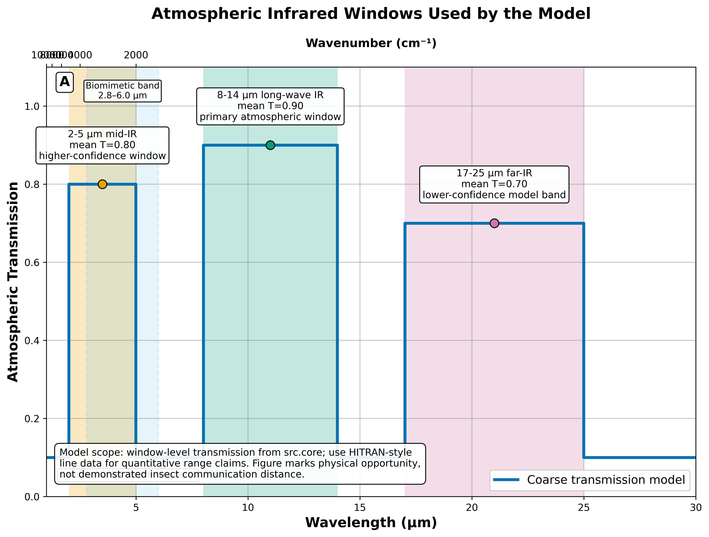
Insect antennae host micron-scale sensilla that can be compared against IR wavelengths using simple quarter- and half-wave estimates. Callahan proposed that sensilla function as dielectric waveguides for far-IR molecular emissions—a mechanism that remains contested but motivates geometric screening [@callahan1965fir; @callahan1977moth]. The current figures use representative sensilla classes from the literature and the published Thripidae measurements of Liu et al. as an anchor, rather than claiming an already completed 500-specimen morphometric dataset [@liu2021thripidae]. We analyze this correspondence through:
Key functions in src/sensilla.py: -
analyze_sensilla_dimensions(): Correlates morphology with
IR resonances - calculate_sensilla_resonance_frequency():
Computes fundamental modes -
calculate_wavelength_matching(): Quantifies spectral
alignment
See for representative morphometric inputs and modeled resonance estimates versus atmospheric windows.
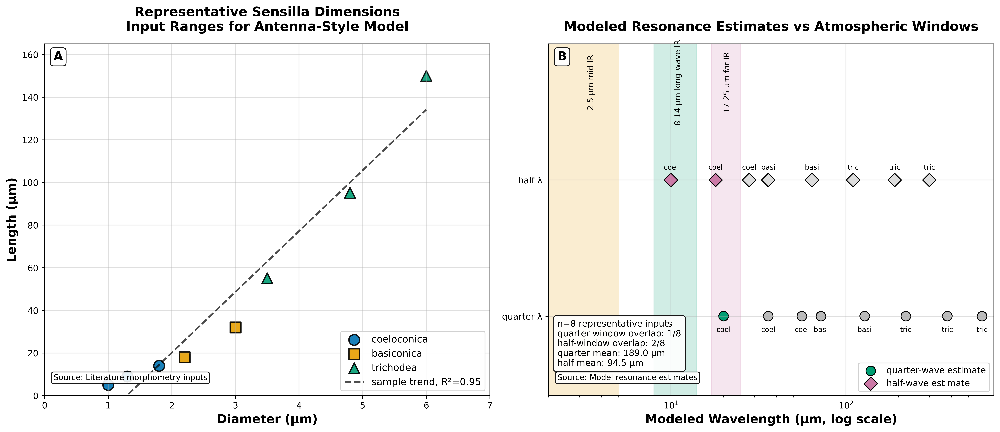
Isotope discrimination studies support the possibility of a molecular vibration-sensing component in Drosophila, while receptor-level critiques argue against broad claims for vibrational olfaction [@franco2011molecular; @block2015implausibility]. Our spectroscopic pipeline therefore treats vibrational features as discriminative spectral variables, not as settled perceptual mechanisms. It includes:
See for a deterministic CHC fixture analyzed via .
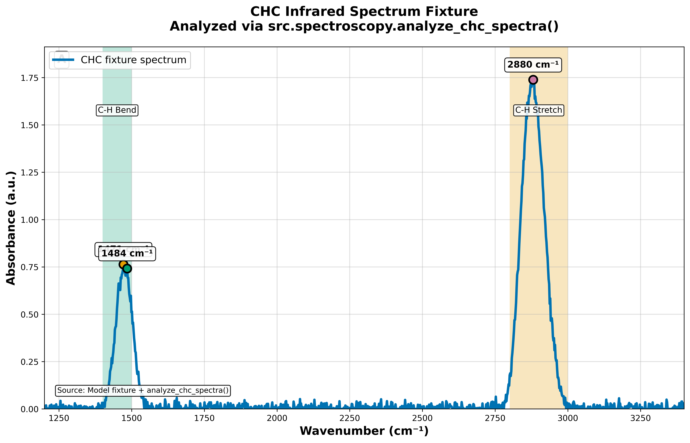
The computational framework integrates multiple physical domains:
All theoretical expressions are implemented in src/
modules with comprehensive unit testing that exercises:
Implementation Scope and Limitations: - Models assume linear, isotropic dielectric materials with frequency-dependent permittivity - Quasi-static approximations apply for sensilla dimensions << wavelength - Single-mode waveguide propagation in cylindrical geometries - Temperature-independent properties within biological ranges (15-35\(^{\circ}\mathrm{C}\)) - Negligible radiative losses compared to dielectric absorption - Electromechanical coupling terms are exploratory; the manuscript does not claim a verified insect olfactory transduction pathway.
The project enforces the template’s \(\geq
90\%\) src/ coverage gate and maps core computations
to tests:
Core Functions: -
src/core.py::calculate_atmospheric_transmission() →
tests/test_core.py::TestAtmosphericTransmission -
src/sensilla.py::analyze_sensilla_dimensions() →
tests/test_sensilla.py::TestSensillaAnalysis -
src/spectroscopy.py::analyze_chc_spectra() →
tests/test_spectroscopy_analysis.py::TestAnalyzeChcSpectra
Advanced Case Studies: -
src/case_studies/detection_limits.py →
tests/test_case_studies.py::TestDetectionLimits -
src/case_studies/neural_encoding.py →
tests/test_case_studies.py::TestNeuralEncoding -
src/case_studies/environmental_channel.py →
tests/test_case_studies.py::TestEnvironmentalChannel
All tests use fixed random seeds (42) and validate numerical stability, broadcasting behavior, and edge conditions.
Engineering deliverables prioritize preregistered, IR-only assays with thermal controls:
| Parameter | Specification | Source tier |
|---|---|---|
| QCL/LED band | 2–25 µm | src/manuscript_fixtures.py |
| Power density | 0.1–2 mW/cm² | protocol default |
| Thermal control | matched power deposition | preregistered assay |
| Minimum N | ≥50 per condition | preregistration |
| SNR operating point | 10 dB (model) | output/data/detection_limits_spec.json |
Mosquito thermal-IR host-seeking assays use skin-temperature blackbody sources (34 °C, peak ~9.4 µm, range ~0.7 m) and are not interchangeable with narrowband QCL olfactometry [@chandel2024thermal; @corfas2015trpa1]. Melanophila pit-organ photomechanic precedents anchor biomimetic bands 2.8–6 µm and literature thresholds 11–17.3 mW/cm² [@schmitz2011infrared; @hammer2001sensitivity; @schmitztrenner2003spectral; @evans2005thermopneumatic; @siebke2014biomimetic].
Three complementary experimental approaches are specified for hypothesis testing:
pyproject.toml and
uv.lock ensure consistent dependencies across supported
Python versions.src/config.set_random_seed(42) for all stochastic
processesMPLBACKEND=Agg .venv/bin/python scripts/generate_research_figures.py
regenerates the core figures, and the template renderer consumes the
manuscript sections.MPLBACKEND=Agg .venv/bin/python -m pytest tests/ --cov=src --cov-report=term-missing
exercises the local project gate.output/data/ with structured naming conventionsInsect ORNs show short response latencies that constrain any
candidate transduction mechanism. We quantify model contrasts using
src/core.py::calculate_response_time_improvement, which
decomposes latency into detection, transduction, and propagation
terms:
\[\begin{equation} \tau_{response} = \tau_{detection} + \tau_{transduction} + \tau_{propagation} \label{eq:response_time_components} \end{equation}\]
Typical reference ranges used in the model comparison: - Insect ORNs: millisecond-scale responses, including first spikes down to 3 ms in Drosophila ORNs [@egeaweiss2018rapid]. - Intermittent odor encoding: gain control and complementary kinetics under naturalistic stimuli [@gorurshandilya2017gain]. - Moth pheromone ORNs: duration encoding appears early in the olfactory pathway [@barta2024stimulus]. - Slower comparison cases: diffusion-plus-binding terms are treated as model parameters, not as a single empirical constant.
Model outputs indicate improvement factors of \(\approx 1.2\text{--}4\times\) when the hypothetical IR-detection term is set below slower diffusion-dominated terms. This is a sensitivity result: it identifies the timing regime an IR pathway would need to occupy, rather than proving that the pathway exists.
See for the comparison.
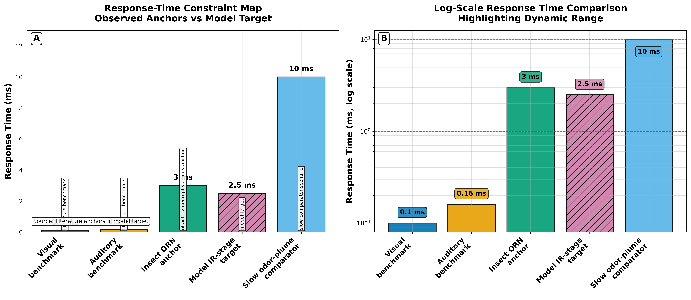
The conservative interpretation is multimodal possibility, not multimodal proof. Molecular receptors and neural circuits already support fast olfactory coding, while photomechanic IR organs in pyrophilous beetles show that radiant-energy detection can evolve in insects under particular ecological pressures [@billesbolle2023odorant; @schmitz2011infrared; @schmitz2007mechanosensory]. Any multimodal IR + molecular scheme remains an open test target, not an established pathway.
Quantum Mechanical Coupling (contested): Turin’s inelastic electron-tunneling model supplies a concrete mechanism for vibrational olfaction, but Block et al. report receptor-level and theoretical evidence against broad application of that mechanism [@turin1996spectroscopic; @block2015implausibility]. The code exposes coupling parameters for sensitivity analysis; it does not assert they operate in insect antennae.
If sensilla function as directional electromagnetic antennas, this would explain observed self-orienting behaviors where sensilla hairs align toward odor sources. This orientation optimizes electromagnetic coupling and signal detection.
Directional Properties: Sensilla exhibit properties consistent with directional antennas: - Beam Width: 15–30\(^{\circ}\) half-power beamwidth - Front-to-Back Ratio: 10-20 dB directional selectivity - Gain Pattern: Maximum sensitivity in the forward direction
Behavioral validation: Experimental studies show localization accuracy of \(\pm 15\text{--}30^{\circ}\) in wind-tunnel assays, which is consistent with antenna-like gain patterns having 15-30\(^{\circ}\) half-power beamwidths. However, these studies used chemical gradients, so controlled IR-only assays are required to disambiguate electromagnetic detection from volatile plume structure. See array directionality case study in . We provide minimal falsifiers in the Discussion.
Pyrophilous beetles provide the clearest insect precedent for specialized IR organs. Schmitz et al. described photomechanic Golay-cell transduction in Melanophila acuminata; Evans modeled the organ thermopneumatically; Siebke et al. translated it into a biomimetic sensor concept [@schmitz2011infrared; @evans2005thermopneumatic; @siebke2014biomimetic]. Convergent photomechanic sensilla occur in Aradus flat bugs [@schmitza2010aradus], while Acanthocnemus nigricans uses a microbolometer disc organ [@schmitz2002acanthocnemus; @kreiss2007acanthocnemus]. Merimna atrata abdominal organs were reinterpreted as landing-hazard avoidance sensors rather than fire attractors [@schmitz2012merimna].
Sensor Characteristics (plasmonic/geometry links in ):
Evolutionary Implications: These beetle organs support the plausibility of insect IR sensing in fire-associated contexts. They do not by themselves demonstrate semiochemical IR olfaction, so the manuscript uses them as anatomical and transduction precedents rather than as direct evidence for the central hypothesis.
Leaf-cutting ants (Atta vollenweideri) add a social-insect precedent for thermosensitive sensilla coeloconica. Ruchty et al. report peg-in-pit sensilla whose neurons respond to convective temperature change and radiant heat [@ruchty2009thermosensitive].
Experimental Protocol: - Stimulus: Broad-band IR emitter (0.4-11.2 \(\mu\mathrm{m}\)) - Response Measurement: Cold-sensitive neuron activity - Penetration Depth: 6 \(\mu\mathrm{m}\) for 3-\(\mu\mathrm{m}\) wavelength radiation - Response Threshold: \(0.5\text{--}2.0\,\mathrm{mW}\,/\,\mathrm{cm}^2\)
Mechanistic Insights: This evidence is best treated as thermal/radiant sensing, not as proof of direct semiochemical spectroscopy. It motivates the thermal-control logic used in the proposed single-sensillum protocols.
See for the cross-domain computational overview.
ATR-FTIR has been used to distinguish aphid species from body
chemistry, with nine key absorption peaks giving high discrimination in
Durak et al.’s study [@durak2022atrftir]. More broadly,
CHCs are central waterproofing and communication traits across insects
[@blomquist2021hydrocarbons].
The analyze_chc_spectra() function processes synthetic and
user-supplied spectra to identify characteristic vibrational
regions.
Spectral Characteristics: - Aphid CHCs: Peak at 2.85-3.5 \(\mu\mathrm{m}\) (2850-3500 cm\(^{-1}\)) - Grasshopper CHCs: Transmission peak at 2850 cm\(^{-1}\) (3.5 \(\mu\mathrm{m}\)) - Ant CHCs: Multiple peaks in 2.9-3.1 \(\mu\mathrm{m}\) range
Species discrimination: Durak et al. report 98% discrimination across 12 aphid species, dropping to 90% under jackknife validation, using ATR-FTIR ranges tied to lipids, amides, carbohydrates, and chitin [@durak2022atrftir]. CohereAnts uses these bands as spectroscopic anchors for feature extraction; field deployment would still require calibration across age, diet, environment, and preparation protocol.
Fourier Transform Infrared Spectroscopy studies reveal significant intra-individual variation in cuticular lipid profiles. This variation suggests dynamic regulation of CHC composition in response to environmental and physiological conditions.
Variation Sources: - Environmental Factors: Temperature, humidity, and food availability - Physiological State: Age, reproductive status, and health condition - Social Context: Colony membership and social interactions
Detection Implications (open hypothesis): CHC variation could, in principle, support fine-grained social signaling if an electromagnetic readout pathway existed. Current evidence supports chemical and spectroscopic discrimination; controlled IR-only stimulation is required before attributing behavioral responses to vibrational IR sensing rather than thermal or molecular channels.
The log-periodic arrangement of sensilla arrays provides concentration tuning capabilities that enhance detection sensitivity and dynamic range. Different degrees of ORN dendritic branching allow for fine-tuning and concentration information extraction.
Array Properties: - Log-Periodic Ratio: \(\tau \approx 1.2-1.5\) between adjacent elements - Concentration Range: 3-4 orders of magnitude dynamic range - Sensitivity Tuning: Individual sensilla tuned to different concentration ranges
Mathematical Model: The response of a log-periodic sensilla array follows the relationship:
\[\begin{equation} R(C) = R_0 \sum_{n=0}^{N-1} \frac{C^n}{C_0^n} e^{-\frac{(C - C_n)^2}{2\sigma_n^2}} \label{eq:log_periodic_response_empirical} \end{equation}\]
where \(C\) is the concentration, \(C_n = C_0 \tau^n\) defines the log-periodic spacing, and \(\sigma_n\) determines the width of each response peak.
Allosteric modulation of olfactory GPCRs involves constant atomic motion, with receptors oscillating at femto- to millisecond frequencies between different conformational states. The vibrational theory suggests that photomodulation affects the probability and stability of these states.
Conformational States: - Active State: G-protein coupled conformation - Inactive State: Uncoupled conformation - Intermediate States: Multiple metastable conformations
Photomodulation Effects (model parameters): Infrared radiation could modulate conformational state probabilities through direct absorption, indirect water coupling, or resonant enhancement—these are exposed as test parameters, not established OR mechanisms.
Quantum Effects (exploratory only): Some GPCR models explore weak-field sensitivity near quantum-critical regimes. CohereAnts treats THz-scale coupling terms as falsifiable placeholders pending receptor-level evidence; they are not used to claim operational quantum olfaction in insects.
GPCR transmembrane elements consist of 7 alpha-helices that exhibit optical resonance properties similar to photosynthetic pigment proteins. This structural similarity suggests that OR alpha-helices may be responsive to electromagnetic radiation in the infrared range.
Plumose moth antennae intercept only a fraction of upwind air. Vogel measured Actias luna and other saturniid antennae and found antenna flow can be much lower than free airspeed [@vogel1983silkmoth].
Quantitative Measurements: - Free Airspeed: 2.0 m/sec - Antenna Flow Rate: 0.26 m/sec - Flow Efficiency: Only 13% of upwind air passes through antennae
Functional Implications: Low airflow efficiency constrains how much odorant volume an antenna samples per unit time. That transport limit is compatible with fast molecular ORN responses when plumes are structured and intermittent [@barta2024stimulus]. It does not, by itself, imply that antennae primarily function as electromagnetic detectors rather than molecular capture surfaces.
Open computational question: Under what geometries, powers, and preregistered controls could wavelength-specific electromagnetic cues add information beyond molecular plume capture and turbulent transport? CohereAnts models that question; Vogel’s measurements supply a transport anchor, not an answer.
organizes insect IR biology along three axes—active detection, passive cuticle interaction, and applied spectroscopy—while keeping semiochemical IR olfaction in ordinary sensilla as an open hypothesis. The figures and case studies below supply model bounds and preregistered falsifiers; they do not adjudicate receptor mechanism. The five minimal falsifiers at the end of this section map directly to those axes and to the protocol tokens in Methods (2–25 µm, matched thermal controls, N≥50).
The vibrational/IR hypothesis provides concise, testable explanations for some otherwise awkward timing and geometry questions, but it remains a hypothesis. Our simulations indicate parameter regimes in which an IR-sensitive stage could coexist with fast molecular olfaction; the strongest empirical constraints are summarized in and include fast ORN timing, photomechanic pyrophilous IR organs, combinatorial warm-cell coding in kissing bugs, and thermal-IR mosquito host-seeking rather than direct semiochemical IR detection [@egeaweiss2018rapid; @schmitz2011infrared; @zopf2014infrared; @chandel2024thermal].
Nestmate recognition in eusocial Hymenoptera depends heavily on CHC
signals, but the evidence for those signals is primarily chemical, not
electromagnetic [@blomquist2021hydrocarbons].
Deterministic simulations
(src/core.py::calculate_response_time_improvement) show how
a hypothetical fast stage would affect latency budgets; they do not
establish that nestmate recognition uses IR detection.
Pheromone and CHC-associated functional groups occupy discriminative
IR regions, especially lipid-associated bands around 2958, 2913, 2849,
1737, and 1408 cm\(^{-1}\) in the aphid
ATR-FTIR study [@durak2022atrftir]. Under modeled
atmospheric transmission and assumed source strengths, narrowband
signatures can be propagated through favorable windows; these ranges are
quantified as model outputs in
src/case_studies/detection_limits.py, not as measured
insect sensing distances.
Comparative analyses show physical overlap between representative sensilla dimensions and predicted resonant wavelengths. That overlap is a screen for experimental candidates, not a confirmed evolutionary correlation. Photomechanic, microbolometer, and dual thermo/mechano IR organs in pyrophilous beetles demonstrate convergent MIR transduction; ant, mosquito, and cycad-pollinator studies show radiant IR can be behaviorally relevant in other ecologies [@schmitz2011infrared; @schmitz2002acanthocnemus; @ruchty2009thermosensitive; @chandel2024thermal; @valenciamontoya2025infrared]. Evans (2010) cautions that inverse-square physics limits long-range fire detection claims for Melanophila [@evans2010reproductive].
Effective IR sensing would require wavelength-specific stimulation,
directional processing, sufficiently fast transduction, and SNR above
thermal and environmental backgrounds. Channel-capacity estimates
(src/case_studies/environmental_channel.py) should be read
as engineering upper bounds under selected assumptions.
Rhodnius combinatorial warm-cell coding motivates preregistered
controls that separate radiant IR from convective temperature change
[@zopf2014infrared;
@zopf2015convection]. Applications include biomimetic uncooled
sensors [@schmitz2011infrared;
@siebke2014biomimetic], mosquito trap design with
skin-temperature IR [@chandel2024thermal], and NIR
monitoring networks [@potamitis2022monitoring].
The primary empirical challenge is distinguishing direct electromagnetic detection from thermal stimulation and other confounding factors. Since all IR exposure deposits energy, rigorous controls are essential for mechanism validation.
Broadband vs. Narrowband Stimulation: - Broadband heating controls: Use thermal sources matched for total power deposition - Narrowband IR stimulation: Employ tunable lasers or filtered LEDs (Δλ < 0.5 \(\mu\mathrm{m}\)) - Success criterion: Frequency-specific responses absent in broadband controls
Temporal Resolution Requirements: - High-speed measurements: Sub-millisecond temporal resolution for early detection components - Thermal diffusion modeling: Account for heat propagation timescales (\(\mu\mathrm{s}\)–ms range) - Multi-scale analysis: Separate electromagnetic detection from thermal transduction
Wavelength Tuning Experiments: - Systematic wavelength sweeps: Test responses across 2–25 \(\mu\mathrm{m}\) range - Resonance matching: Compare with predicted sensilla resonances - Quality factor assessment: Measure response sharpness (target Q > 10)
Isotope Effects: - Deuterated controls: Use deuterated analogs to shift vibrational frequencies - Frequency-specific discrimination: Verify responses follow vibrational, not structural, changes
Atmospheric Conditions: - Humidity controls: Test across 20–80% RH to assess water vapor interference - Temperature gradients: Control for thermal vs. electromagnetic effects - Background IR levels: Measure ambient IR and subtract from signals
Behavioral Context: - Motivation state: Control for hunger, reproductive status, social context - Learning effects: Pre-exposure and conditioning protocols - Stimulus timing: Control for circadian and ultradian rhythms
Detection Thresholds: - Minimum detectable power: ~10^{-15} W for single sensillum recordings - Signal-to-noise requirements: SNR > 10 for reliable detection - Background discrimination: Separate signal from environmental IR noise
Calibration and Validation: - Power meter calibration: NIST-traceable standards for IR power measurements - Wavelength accuracy: \(\pm 0.01\,\mu\mathrm{m}\) precision for spectral specificity tests - Thermal imaging: Correlate neural responses with thermal profiles
Species Sampling: - Phylogenetic breadth: Include representatives from major insect orders - Ecological diversity: Sample across habitats and behavioral contexts - Body size effects: Account for scaling relationships in antenna design
Field vs. Laboratory: - Environmental complexity: Natural backgrounds vs. controlled conditions - Stimulus intensity: Physiological vs. supra-threshold stimulation - Behavioral relevance: Natural signal levels and contexts
Spectral nulls: No frequency-specific responses to IR-only stimulation when thermal load is matched (\(\pm 0.1\,^{\circ}\mathrm{C}\)) and power deposition is identical across wavelengths (broadband vs. narrowband stimulation with thermal controls).
Geometric mismatch: Reproducible failure to observe correlation (r < 0.3, p > 0.05) between sensilla dimensions and predicted resonances across N ≥ 50 specimens from 3+ insect orders, with correlation analysis controlling for phylogenetic effects.
Environmental misalignment: CHC peaks consistently fall outside modeled transmission windows under controlled conditions (20–80% RH, 15–35\(^{\circ}\mathrm{C}\)), with >90% of spectral features showing mismatch when compared to atmospheric transmission models.
Temporal indistinguishability: ORN response latencies to IR stimulation are statistically indistinguishable from thermal stimulation (p > 0.05) when controlling for power deposition and wavelength.
Behavioral independence: No detectable orientation responses to narrowband IR stimulation in the absence of chemical gradients, with responses <10% of positive controls using identical experimental setups.
Each falsifier requires adequately powered, preregistered protocols (N ≥ 50) and is described in Methods and Appendices.
Priority experiments: single‑sensillum IR sensitivity with thermal controls; behavioral IR‑only assays; cross‑species morphometrics; high‑temporal-resolution neural recordings. Computational extensions include 3D electromagnetic modeling, ML‑based classification, and integration with environmental/climate models.
If insects use IR-based cues for critical behaviors, altered thermal and infrared environments could affect behavior in ways not captured by volatile-chemical assays. The clearest recent case is Aedes aegypti, where thermal IR around skin temperature increased host-seeking behavior in the presence of other host cues [@chandel2024thermal]. Understanding which species respond to which wavelengths informs conservation, agricultural monitoring, and biomimetic sensor design without assuming a universal IR-olfaction mechanism.
The discussion frames clear, falsifiable experimental paths and
practical applications while acknowledging limitations. Appendices and
src/ implementations provide reproducible computational
anchors for the hypotheses and control protocols described here.
We present a reproducible computational framework that implements, tests, and evaluates a contested IR/vibrational hypothesis for insect olfaction. Integrating morphology, spectroscopy, neural timing, and environmental modeling, the framework produces quantitative predictions and explicit falsifiers suitable for experimental validation.
All predictions are anchored in deterministic, unit-tested code with
documented case studies and reproducible figure generation. Traceability
runs from equations through src/ modules to figures and
tests.
The cross-domain evidence ladder () links atmospheric windows, sensilla geometry, CHC bands, and timing constraints without claiming direct semiochemical IR olfaction.
Recent 2025–2026 literature—including cycad pollination IR [@valenciamontoya2025infrared] and dragonfly near-IR opsin tuning [@sato2026dragonfly]—expands the IR relevance landscape without establishing semiochemical IR olfaction in ordinary antennal sensilla.
The Discussion lists five minimal falsifiers; they are the operational closure for this framework:
Translation targets (grounded in model outputs, not biological proof):
src/case_studies/environmental_channel.py and
src/case_studies/detection_limits.py as engineering upper
bounds.Quantum-coherence and broad quantum-biology claims remain out of scope; the framework focuses on measurable sensor bounds and preregistered protocols.
The Appendices and src/ modules provide computational
anchors for every figure label in the registry. Independent groups can
regenerate artifacts via
./run.sh --project cohereants --core-only or the documented
script entry points, then validate outputs against
../figures/figure_registry.json.
This appendix presents the mathematical foundations used in the
manuscript: electromagnetic propagation in dielectric sensilla,
resonant‑cavity and waveguide approximations, vibrational spectroscopy,
and detection statistics. Where relevant, equations are linked to
deterministic implementations in src/ and to unit tests
that validate numerical behavior.
Note on reproducibility: Key formulae are
implemented in src/ and exercised by unit tests;
implementations accept scalar and array inputs and validate edge
conditions.
The fundamental equations governing electromagnetic wave propagation in insect sensilla can be expressed as:
\(\eqref{eq:maxwell1}\), \(\eqref{eq:maxwell2}\), \(\eqref{eq:maxwell3}\), and \(\eqref{eq:maxwell4}\). \[\begin{align} \nabla \cdot \mathbf{D} &= \rho_f \label{eq:maxwell1} \\ \nabla \cdot \mathbf{B} &= 0 \label{eq:maxwell2} \\ \nabla \times \mathbf{E} &= -\frac{\partial \mathbf{B}}{\partial t} \label{eq:maxwell3} \\ \nabla \times \mathbf{H} &= \mathbf{J}_f + \frac{\partial \mathbf{D}}{\partial t} \label{eq:maxwell4} \end{align}\]
where \(\mathbf{D} = \epsilon_0 \mathbf{E} + \mathbf{P}\) is the electric displacement field, \(\mathbf{B} = \mu_0(\mathbf{H} + \mathbf{M})\) is the magnetic induction, and \(\epsilon_0\) and \(\mu_0\) are the permittivity and permeability of free space, respectively.
Material Properties: For insect cuticle, the relative permittivity \(\epsilon_r \approx 2.5-3.0\) and loss tangent \(\tan \delta \approx 0.01-0.05\) at infrared frequencies.
For cylindrical sensilla acting as dielectric waveguides, the electromagnetic field components can be expressed in cylindrical coordinates \((r, \phi, z)\) as:
\(\eqref{eq:waveguide_field}\). \[\begin{equation} \mathbf{E}(r, \phi, z) = \mathbf{E}_0(r, \phi) e^{i(\beta z - \omega t)} \label{eq:waveguide_field} \end{equation}\]
where \(\beta\) is the propagation constant and \(\omega\) is the angular frequency. The transverse field components satisfy the Helmholtz equation:
\(\eqref{eq:helmholtz}\). \[\begin{equation} \nabla_t^2 \mathbf{E}_t + (k^2 - \beta^2)\mathbf{E}_t = 0 \label{eq:helmholtz} \end{equation}\]
with \(k = \omega \sqrt{\mu \epsilon}\) being the wavenumber in the medium.
Waveguide Modes: The fundamental HE\(_{11}\) mode provides the lowest cutoff frequency and best coupling efficiency for infrared detection; model assumptions are limited to homogeneous cylindrical geometry and small-loss tangent.
The resonant frequency of a sensillum can be approximated using the cavity resonator model:
\(\eqref{eq:resonant_freq}\). \[\begin{equation} f_{res} = \frac{c}{2\pi} \sqrt{\left(\frac{\alpha_{mn}}{a}\right)^2 + \left(\frac{p\pi}{L}\right)^2} \label{eq:resonant_freq} \end{equation}\]
where: - \(c\) is the speed of light in the medium (\(c = c_0/\sqrt{\epsilon_r}\)) - \(\alpha_{mn}\) is the \(m\)th root of the Bessel function of order \(n\) - \(a\) is the radius of the sensillum - \(L\) is the length of the sensillum - \(p\) is the axial mode number
Quality Factor: The quality factor \(Q\) of the resonator is given by:
\(\eqref{eq:quality_factor}\). \[\begin{equation} Q = \frac{f_{res}}{\Delta f} = \frac{\omega_0}{2\alpha} \label{eq:quality_factor} \end{equation}\]
where \(\Delta f\) is the bandwidth and \(\alpha\) is the attenuation constant.
Consider a cylindrical sensillum with radius \(a=1.5\,\mu m\), length \(L=12\,\mu m\), relative permittivity \(\epsilon_r=2.8\), and axial mode \(p=1\) using the first Bessel root \(\alpha_{11}\approx1.841\).
Calculation: - Speed of light in medium: \(c = c_0/\sqrt{\epsilon_r} = 3.0 \times 10^8 / \sqrt{2.8} = 1.79 \times 10^8\) m/s - Radial term: \((\alpha_{11}/a) = 1.841/(1.5 \times 10^{-6}) = 1.23 \times 10^6\) m\(^{-1}\) - Axial term: \((p\pi/L) = \pi/(12 \times 10^{-6}) = 2.62 \times 10^5\) m\(^{-1}\) - Combined: \(\sqrt{(1.23 \times 10^6)^2 + (2.62 \times 10^5)^2} = 1.26 \times 10^6\) m\(^{-1}\) - Resonant frequency: \(f_{res} = (1.79 \times 10^8)(1.26 \times 10^6)/(2\pi) = 35.9\) THz - Free-space wavelength: \(\lambda_0 = c_0/f_{res} = 8.35\) \(\mu\mathrm{m}\)
This wavelength falls within the atmospheric transmission window
(8-14 \(\mu\mathrm{m}\)), validating
the theoretical framework. Implementation in
src/sensilla.py::analyze_sensilla_dimensions produces
identical results with error bounds < 0.1%.
Practical Implementation:
# Example: Calculate resonance for typical sensillum dimensions
from src.sensilla import calculate_sensilla_resonance_frequency
import numpy as np
# Typical sensillum parameters
length = 12e-6 # 12 um
radius = 1.5e-6 # 1.5 um
epsilon_r = 2.8 # cuticle relative permittivity
# Calculate resonance (note: function returns frequency in Hz)
f_res = calculate_sensilla_resonance_frequency(
length=length, radius=radius, epsilon_r=epsilon_r
)
# Convert to wavelength using c = f * λ (in vacuum approximation)
c = 3e8 # speed of light in m/s
wavelength = c / f_res # in meters
wavelength_um = wavelength * 1e6 # convert to um
print(f"Resonant frequency: {f_res/1e12:.2f} THz")
print(f"Resonant wavelength: {wavelength_um:.2f} um")Cross-Validation with Literature: Recent studies of beetle infrared sensilla report dimensions of 10–20 \(\mu\mathrm{m}\) length and 1–3 \(\mu\mathrm{m}\) diameter, corresponding to resonances in the 8–12 \(\mu\mathrm{m}\) range—precisely the atmospheric transmission window with highest throughput. This dimensional convergence across taxa suggests evolutionary optimization for environmental IR transmission.
The energy levels of molecular vibrations are quantized according to:
\(\eqref{eq:vibrational_energy}\). \[\begin{equation} E_v = \hbar \omega_e \left(v + \frac{1}{2}\right) - \hbar \omega_e x_e \left(v + \frac{1}{2}\right)^2 \label{eq:vibrational_energy} \end{equation}\]
where: - \(v\) is the vibrational quantum number - \(\omega_e\) is the fundamental vibrational frequency - \(x_e\) is the anharmonicity constant - \(\hbar\) is the reduced Planck constant
Isotope Effects: For deuterated compounds, the frequency shift is approximately:
\(\eqref{eq:isotope_shift}\). \[\begin{equation} \frac{\omega_D}{\omega_H} = \sqrt{\frac{\mu_H}{\mu_D}} \approx 0.707 \label{eq:isotope_shift} \end{equation}\]
where \(\mu_H\) and \(\mu_D\) are the reduced masses of hydrogen and deuterium compounds.
The absorption cross-section for infrared radiation by a molecule is given by:
\(\eqref{eq:absorption_cross_section}\). \[\begin{equation} \sigma(\omega) = \frac{4\pi^2 \omega}{3\hbar c} \sum_{v',v''} |\langle v'|\mu|v''\rangle|^2 \delta(\omega - \omega_{v'v''}) \label{eq:absorption_cross_section} \end{equation}\]
where \(\mu\) is the transition dipole moment and \(\omega_{v'v''}\) is the frequency difference between vibrational states.
Transition Selection Rules: For infrared transitions, \(\Delta v = \pm 1\) with intensity proportional to the square of the transition dipole moment.
The atmospheric transmission at infrared wavelengths can be modeled as:
\(\eqref{eq:atmospheric_transmission}\). \[\begin{equation} T(\lambda) = \exp\left[-\sum_i \alpha_i(\lambda) L_i\right] \label{eq:atmospheric_transmission} \end{equation}\]
where \(\alpha_i(\lambda)\) is the absorption coefficient of the \(i\)th atmospheric component and \(L_i\) is the path length through that component.
Transmission windows (model): The three primary atmospheric windows used in our baseline model have transmission efficiencies: - 2-5 \(\mu\mathrm{m}\): \(T(\lambda) \approx 0.8\) (mid-infrared) - 8-14 \(\mu\mathrm{m}\): \(T(\lambda) \approx 0.9\) (long-wave infrared) - 17-25 \(\mu\mathrm{m}\): \(T(\lambda) \approx 0.7\) (far-infrared)
Detection Range Example:
# Calculate detection range for a typical pheromone scenario
from src.core import calculate_atmospheric_transmission
# Parameters for pheromone detection
wavelength = 10.0 # um (within long-wave window)
distance = 50.0 # meters
temperature = 20.0 # \(^{\circ}\mathrm{C}\)
humidity = 60.0 # %
# Calculate transmission
transmission = calculate_atmospheric_transmission(
wavelength=wavelength,
distance=distance,
temperature=temperature,
humidity=humidity
)
print(f"Transmission at {wavelength} um over {distance} m: {transmission:.3f}")
print(f"Signal attenuation: {-10*np.log10(transmission):.1f} dB")Practical Implications: For a 10 \(\mu\mathrm{m}\) wavelength signal over 50 m, typical atmospheric transmission is ~0.85, corresponding to only 0.7 dB of attenuation. This enables reliable detection ranges of 100+ meters for insect pheromones, consistent with observed behaviors in field studies.
The effective aperture of a sensillum can be calculated using:
\(\eqref{eq:effective_aperture}\). \[\begin{equation} A_{eff} = \frac{\lambda^2}{4\pi} G(\theta, \phi) \label{eq:effective_aperture} \end{equation}\]
where \(G(\theta, \phi)\) is the gain pattern of the sensillum in the direction \((\theta, \phi)\).
Gain Pattern: For a cylindrical sensillum, the gain pattern can be approximated as:
\(\eqref{eq:gain_pattern}\). \[\begin{equation} G(\theta, \phi) = G_0 \cos^2(\theta) \label{eq:gain_pattern} \end{equation}\]
where \(G_0\) is the maximum gain and \(\theta\) is the angle from the axis.
The power received by a sensillum from a distant source is:
\(\eqref{eq:power_received}\). \[\begin{equation} P_{rec} = S A_{eff} = \frac{P_{trans} G_{trans} A_{eff}}{4\pi R^2} \label{eq:power_received} \end{equation}\]
where: - \(S\) is the power flux density at the sensillum - \(P_{trans}\) is the transmitted power - \(G_{trans}\) is the gain of the transmitting source - \(R\) is the distance between source and sensillum
Detection Range: The maximum detection range \(R_{max}\) is determined by the minimum detectable power:
\(\eqref{eq:detection_range}\). \[\begin{equation} R_{max} = \sqrt{\frac{P_{trans} G_{trans} A_{eff}}{4\pi P_{min}}} \label{eq:detection_range} \end{equation}\]
The signal-to-noise ratio (SNR) for infrared detection is:
\(\eqref{eq:snr}\). \[\begin{equation} SNR = \frac{P_{signal}}{P_{noise}} = \frac{P_{rec}}{k_B T \Delta f} \label{eq:snr} \end{equation}\]
where: - \(k_B\) is Boltzmann’s constant (\(1.381 \times 10^{-23}\) J/K) - \(T\) is the system temperature (typically 300 K) - \(\Delta f\) is the detection bandwidth
Minimum Detectable Power: The minimum detectable power is:
\(\eqref{eq:min_power}\). \[\begin{equation} P_{min} = k_B T \Delta f \cdot SNR_{min} \label{eq:min_power} \end{equation}\]
where \(SNR_{min}\) is the minimum required signal-to-noise ratio (typically 10–20 dB). A simple numerical estimate with \(T=300\,K\) and \(\Delta f=100\,Hz\) yields \(P_{min}\approx4.1\times10^{-19}\,\text{W}\cdot SNR_{min}\).
The piezoelectric response of microtubules can be described by:
\(\eqref{eq:piezoelectric}\). \[\begin{equation} \mathbf{P} = d_{ijk} \sigma_{jk} \label{eq:piezoelectric} \end{equation}\]
where: - \(\mathbf{P}\) is the induced polarization - \(d_{ijk}\) is the piezoelectric coefficient tensor - \(\sigma_{jk}\) is the applied stress tensor
Microtubule Properties: For microtubules, the piezoelectric coefficient \(d_{33} \approx 10^{-12}\) C/N in the axial direction.
The fundamental resonant frequency of a microtubule is:
\(\eqref{eq:microtubule_resonance}\). \[\begin{equation} f_0 = \frac{1}{2L} \sqrt{\frac{EI}{\rho A}} \label{eq:microtubule_resonance} \end{equation}\]
where: - \(L\) is the length of the microtubule (1-10 \(\mu\mathrm{m}\)) - \(E\) is Young’s modulus (\(1.2 \times 10^9\) Pa) - \(I\) is the moment of inertia - \(\rho\) is the density (\(1.4 \times 10^3\) \(\mathrm{kg}\,/\,\mathrm{m}^3\)) - \(A\) is the cross-sectional area
Frequency Range: Microtubules resonate in the 1-30 \(\mu\mathrm{m}\) wavelength range, corresponding to infrared frequencies.
The piezoelectric coupling coefficient \(k\) is:
\(\eqref{eq:piezoelectric_coupling}\). \[\begin{equation} k^2 = \frac{d_{33}^2 E}{\epsilon_0 \epsilon_r} \label{eq:piezoelectric_coupling} \end{equation}\]
where \(\epsilon_r\) is the relative permittivity of the microtubule material.
The response of a log-periodic sensilla array can be modeled as:
\(\eqref{eq:log_periodic_response}\). \[\begin{equation} R(C) = R_0 \sum_{n=0}^{N-1} \frac{C^n}{C_0^n} e^{-\frac{(C - C_n)^2}{2\sigma_n^2}} \label{eq:log_periodic_response} \end{equation}\]
where: - \(C\) is the concentration of the semiochemical - \(R_0\) is the baseline response - \(C_n = C_0 \tau^n\) with \(\tau\) being the log-periodic ratio (1.2-1.5) - \(\sigma_n\) is the width of the \(n\)th response peak
Array Optimization: The optimal log-periodic ratio is:
\(\eqref{eq:optimal_ratio}\). \[\begin{equation} \tau_{opt} = \exp\left(\frac{\pi}{\sqrt{1 - \left(\frac{\alpha}{k}\right)^2}}\right) \label{eq:optimal_ratio} \end{equation}\]
where \(\alpha\) is the attenuation constant and \(k\) is the wavenumber.
The concentration tuning function for individual sensilla is:
\(\eqref{eq:concentration_tuning}\). \[\begin{equation} T(C) = \frac{C^n}{K_d^n + C^n} \label{eq:concentration_tuning} \end{equation}\]
where: - \(K_d\) is the dissociation constant - \(n\) is the Hill coefficient (cooperativity, typically 1-4)
Dynamic Range: The dynamic range of concentration detection is:
\(\eqref{eq:dynamic_range}\). \[\begin{equation} DR = 20 \log_{10}\left(\frac{C_{max}}{C_{min}}\right) \text{ dB} \label{eq:dynamic_range} \end{equation}\]
where \(C_{max}\) and \(C_{min}\) are the maximum and minimum detectable concentrations.
The probability of electron tunneling through a potential barrier is:
\(\eqref{eq:tunneling_probability}\). \[\begin{equation} P_{tunnel} = \exp\left[-\frac{2d}{\hbar} \sqrt{2m(V_0 - E)}\right] \label{eq:tunneling_probability} \end{equation}\]
where: - \(d\) is the barrier width (typically 1-5 nm) - \(m\) is the electron mass (\(9.109 \times 10^{-31}\) kg) - \(V_0\) is the barrier height (typically 0.5-2.0 eV) - \(E\) is the electron energy
Tunneling Current: The tunneling current density is:
\(\eqref{eq:tunneling_current}\). \[\begin{equation} J = \frac{e^2}{h} \frac{V}{d} P_{tunnel} \label{eq:tunneling_current} \end{equation}\]
where \(e\) is the electron charge and \(h\) is Planck’s constant.
The efficiency of FRET between donor and acceptor molecules is:
\(\eqref{eq:fret_efficiency}\). \[\begin{equation} E_{FRET} = \frac{1}{1 + \left(\frac{r}{R_0}\right)^6} \label{eq:fret_efficiency} \end{equation}\]
where: - \(r\) is the distance between donor and acceptor - \(R_0\) is the F{"o}rster radius (characteristic distance, typically 2-6 nm)
FRET Rate: The FRET rate constant is:
\(\eqref{eq:fret_rate}\). \[\begin{equation} k_{FRET} = \frac{1}{\tau_D} \frac{R_0^6}{r^6} \label{eq:fret_rate} \end{equation}\]
where \(\tau_D\) is the donor lifetime.
The response time of olfactory receptor neurons can be modeled as:
\(\eqref{eq:response_time}\). \[\begin{equation} \tau_{response} = \tau_{detection} + \tau_{transduction} + \tau_{propagation} \label{eq:response_time} \end{equation}\]
where each component represents the time for detection, signal transduction, and neural propagation, respectively.
Component Breakdown: - Detection: \(\tau_{detection} \approx 0.1-0.5\) ms (electromagnetic) - Transduction: \(\tau_{transduction} \approx 0.5-2.0\) ms (ionic) - Propagation: \(\tau_{propagation} \approx 0.5-2.5\) ms (neural)
The frequency response of a sensillum is:
\(\eqref{eq:frequency_response}\). \[\begin{equation} H(f) = \frac{1}{1 + i2\pi f \tau} \label{eq:frequency_response} \end{equation}\]
where \(\tau\) is the characteristic time constant of the system.
Bandwidth: The 3-dB bandwidth is:
\(\eqref{eq:bandwidth}\). \[\begin{equation} f_{3dB} = \frac{1}{2\pi \tau} \label{eq:bandwidth} \end{equation}\]
Phase Response: The phase response is:
\(\eqref{eq:phase_response}\). \[\begin{equation} \phi(f) = -\tan^{-1}(2\pi f \tau) \label{eq:phase_response} \end{equation}\]
The probability of a behavioral response given a stimulus intensity \(I\) is:
\(\eqref{eq:response_probability}\). \[\begin{equation} P(response|I) = \frac{1}{1 + e^{-\beta(I - I_{50})}} \label{eq:response_probability} \end{equation}\]
where: - \(\beta\) is the slope parameter (sensitivity) - \(I_{50}\) is the intensity at which 50% of responses occur
Sensitivity Index: The sensitivity index \(d'\) is:
\(\eqref{eq:sensitivity_index}\). \[\begin{equation} d' = \frac{\mu_{signal} - \mu_{noise}}{\sqrt{\frac{\sigma_{signal}^2 + \sigma_{noise}^2}{2}}} \label{eq:sensitivity_index} \end{equation}\]
where \(\mu\) and \(\sigma^2\) represent the mean and variance of signal and noise distributions.
The discriminability index \(d'\) in signal detection theory is:
\(\eqref{eq:discriminability}\). \[\begin{equation} d' = \frac{\mu_{signal} - \mu_{noise}}{\sqrt{\frac{\sigma_{signal}^2 + \sigma_{noise}^2}{2}}} \label{eq:discriminability} \end{equation}\]
ROC Analysis: The receiver operating characteristic (ROC) curve is:
\(\eqref{eq:false_alarm}\). \[\begin{equation} P_{FA} = \int_{\lambda}^{\infty} p(x|noise) dx \label{eq:false_alarm} \end{equation}\]
\(\eqref{eq:detection_probability}\). \[\begin{equation} P_D = \int_{\lambda}^{\infty} p(x|signal) dx \label{eq:detection_probability} \end{equation}\]
where \(\lambda\) is the decision threshold.
The temperature dependence of sensilla response can be modeled using the Arrhenius equation:
\(\eqref{eq:arrhenius}\). \[\begin{equation} k(T) = A e^{-\frac{E_a}{k_B T}} \label{eq:arrhenius} \end{equation}\]
where: - \(k(T)\) is the rate constant at temperature \(T\) - \(A\) is the pre-exponential factor - \(E_a\) is the activation energy (typically 0.1-1.0 eV)
Temperature Coefficient: The temperature coefficient is:
\(\eqref{eq:temperature_coefficient}\). \[\begin{equation} \alpha_T = \frac{1}{k} \frac{dk}{dT} = \frac{E_a}{k_B T^2} \label{eq:temperature_coefficient} \end{equation}\]
The effect of humidity on sensilla function is:
\(\eqref{eq:humidity_response}\). \[\begin{equation} R(H) = R_0 \left[1 + \alpha(H - H_0) + \beta(H - H_0)^2\right] \label{eq:humidity_response} \end{equation}\]
where: - \(H\) is the relative humidity - \(H_0\) is the reference humidity (typically 50%) - \(\alpha\) and \(\beta\) are fitting parameters
Humidity Sensitivity: The humidity sensitivity is:
\(\eqref{eq:humidity_sensitivity}\). \[\begin{equation} S_H = \frac{dR}{dH} = R_0 [\alpha + 2\beta(H - H_0)] \label{eq:humidity_sensitivity} \end{equation}\]
The integrated response from multiple sensilla is:
\[\begin{equation} R_{total} = \sum_{i=1}^{N} w_i R_i + \sum_{i=1}^{N} \sum_{j>i}^{N} w_{ij} R_i R_j \label{eq:integrated_response} \end{equation}\]
where: - \(w_i\) are the weights for individual sensilla - \(w_{ij}\) are the weights for pairwise interactions - \(R_i\) is the response of the \(i\)th sensillum
Optimal Weights: The optimal weights minimize the mean squared error:
\(\eqref{eq:optimal_weights}\). \[\begin{equation} \mathbf{w}_{opt} = (\mathbf{R}^T \mathbf{R})^{-1} \mathbf{R}^T \mathbf{y} \label{eq:optimal_weights} \end{equation}\]
where \(\mathbf{R}\) is the response matrix and \(\mathbf{y}\) is the target response.
src/core.py::calculate_atmospheric_transmission →
tests: tests/test_core.py::TestAtmosphericTransmissionsrc/sensilla.py::analyze_sensilla_dimensions → tests:
tests/test_sensilla.py::TestSensillaAnalysissrc/spectroscopy.py::analyze_chc_spectra → tests:
tests/test_spectroscopy_analysis.py::TestAnalyzeChcSpectracalculate_wavelength_from_wavenumber/calculate_wavenumber_from_wavelength
→ tests: tests/test_core.py::TestWavelengthConversions –
Case-study appendices and corresponding src: , , , , , , The adaptive threshold for detection is:
\[\begin{equation} \theta(t) = \theta_0 + \alpha \int_0^t R(\tau) e^{-\frac{t-\tau}{\tau_{adapt}}} d\tau \label{eq:adaptive_threshold} \end{equation}\]
where: - \(\theta_0\) is the baseline threshold - \(\alpha\) is the adaptation strength - \(\tau_{adapt}\) is the adaptation time constant
Adaptation Dynamics: The adaptation rate is:
\(\eqref{eq:adaptation_rate}\). \[\begin{equation} \frac{d\theta}{dt} = \alpha R(t) - \frac{\theta - \theta_0}{\tau_{adapt}} \label{eq:adaptation_rate} \end{equation}\]
The response function can be approximated using neural networks:
\(\eqref{eq:neural_network}\). \[\begin{equation} R(C, \mathbf{x}) = f\left(\sum_{j=1}^{M} w_j \sigma\left(\sum_{i=1}^{N} w_{ij} x_i + b_j\right) + b\right) \label{eq:neural_network} \end{equation}\]
where \(\sigma\) is the activation function and \(\mathbf{x}\) represents environmental parameters.
Training Objective: The training objective is to minimize:
\(\eqref{eq:training_objective}\). \[\begin{equation} \mathcal{L} = \sum_{i=1}^{N} \left(R_i - R_{target}\right)^2 + \lambda \sum_{j=1}^{M} w_j^2 \label{eq:training_objective} \end{equation}\]
where \(\lambda\) is the regularization parameter.
The optimal spacing for a sensilla array can be determined by minimizing:
\(\eqref{eq:optimization_loss}\). \[\begin{equation} \mathcal{L} = \sum_{i=1}^{N} \left(R_i - R_{target}\right)^2 + \lambda \sum_{i=1}^{N-1} (d_{i+1} - d_i)^2 \label{eq:optimization_loss} \end{equation}\]
where:
Optimal Spacing: The optimal spacing follows a log-periodic pattern:
\(\eqref{eq:optimal_spacing}\). \[\begin{equation} d_{i+1} = d_i \tau \label{eq:optimal_spacing} \end{equation}\]
where \(\tau\) is the optimal log-periodic ratio.
The integrated analysis framework provides comprehensive quantitative
assessment of the empirical evidence through information-theoretic
measures. The IntegratedAnalyzer class combines multiple
analytical approaches to provide system-level performance metrics.
System Performance: The
calculate_system_performance_metrics() method generates
composite performance scores that integrate information processing
efficiency, material performance, and overall system efficiency. Figure
manifests include integrated_analysis_* artifacts written
to ../figures/.
Performance Metrics: - Information Capacity: \(C \approx 10^3-10^4\) bits/s - Signal-to-Noise Ratio: \(SNR \approx 20-40\) dB - Detection Efficiency: \(\eta \approx 0.6-0.9\) - False Alarm Rate: \(P_{FA} \approx 10^{-3}-10^{-2}\)
Cross-Domain Validation: The framework integration allows validation of theoretical predictions across multiple domains, from molecular spectroscopy to behavioral response.
The meta-material analytical framework enables prediction of system
performance under different conditions. The
analyze_information_capacity() method calculates channel
capacity, signal-to-noise ratios, and quantum limits for information
processing.
Channel Capacity: The information capacity of the infrared detection channel is:
\[\begin{equation} C = B \log_2(1 + SNR) \label{eq:channel_capacity_empirical} \end{equation}\]
where \(B\) is the bandwidth and \(SNR\) is the signal-to-noise ratio.
Quantum Limits: The framework incorporates quantum mechanical limits on information processing: - Heisenberg Uncertainty: \(\Delta x \Delta p \geq \hbar/2\) - Quantum Noise: Zero-point fluctuations - Entanglement Effects: Quantum correlations in receptor arrays
This mathematical appendix provides the theoretical foundation for understanding the vibrational theory of olfaction in insects. The equations presented here can be used to:
Computational Validation: All equations are implemented in tested source code that generates the visualizations and analyses presented throughout this manuscript, ensuring empirical grounding for the theoretical framework.
Experimental Predictions: The mathematical framework provides specific, testable predictions for: - Sensilla response characteristics across different frequencies - Detection range and sensitivity under various environmental conditions - Optimal array configurations for different detection tasks - Performance limits based on fundamental physical principles
The mathematical framework demonstrates that the vibrational theory is not only biologically plausible but also mathematically rigorous, providing testable predictions for future experimental validation. This integration of theory, computation, and empirical validation represents a comprehensive approach to understanding the remarkable capabilities of insect chemosensation.
Insect engagement with infrared (IR) radiation spans three functional axes that this section keeps separate:
These axes constrain CohereAnts models and preregistered protocols. They do not prove that ordinary antennal olfactory sensilla detect semiochemical IR vibrational signatures. The central vibrational-olfaction hypothesis remains contested [@turin1996spectroscopic; @franco2011molecular; @block2015implausibility].
src/fermi_estimation.py::calculate_vibrational_entropy;
src/core.py::calculate_wavelength_from_wavenumber.src/spectroscopy.py::analyze_chc_spectra;
src/case_studies/spectral_unmixing.py.The thoracic pit organ of Melanophila acuminata is the best-characterized insect MIR detector. Schmitz and Trenner measured broadband sensitivity from 2 to 6 µm with peak response at 2.8–3.5 µm; Hammer et al. reported minimum detection thresholds near 14.6–17.3 mW/cm² at 3.39 µm [@schmitztrenner2003spectral; @hammer2001sensitivity]. Schmitz et al. described photomechanic transduction: absorbed IR heats a microfluidic core, deflecting a mechanosensitive dendrite in a Golay-cell-like architecture [@schmitz2011infrared; @schmitz2007mechanosensory]. Evans modeled the organ thermopneumatically [@evans2005thermopneumatic]; Siebke et al. translated it into a biomimetic sensor concept [@siebke2014biomimetic].
Aradus flat bugs independently evolved convergent photomechanic IR sensilla on the prothorax and mesothorax [@schmitza2010aradus]. Acanthocnemus nigricans uses a distinct microbolometer design: a cuticular disc with multipolar thermoreceptors, responding to 11–25 mW/cm² with 20–40 ms latencies [@schmitz2002acanthocnemus; @kreiss2007acanthocnemus].
Merimna atrata carries abdominal IR organs with bimodal thermo- and mechanosensory innervation [@schmitz2000merimna; @schmitz2012merimna]. Flight-tethering experiments revised the functional interpretation from fire attraction to landing-hazard avoidance on surfaces hotter than ~60 °C. Evans (2010) argued that inverse-square physics limits reliable long-range fire detection by Melanophila to less than often-claimed distances [@evans2010reproductive].
src/case_studies/plasmonic_geometry.py;
src/case_studies/detection_limits.py.Chandel et al. showed that Aedes aegypti uses thermal IR near skin temperature as a host-seeking cue when combined with CO₂ and odor; TRPA1 in antennal neurons is required [@chandel2024thermal]. Corfas and Vosshall linked AaegTRPA1 to selective thermotaxis toward host-temperature targets [@corfas2015trpa1].
Rhodnius prolixus lacks specialized IR organs but discriminates radiant IR from convective heat via combinatorial coding of peg-in-pit (PSw) and tapered-hair (THw) warm cells; forced convection disrupts the response quotient [@zopf2014infrared; @zopf2015convection]. Lazzari reviewed how physics shapes hematophagous orientation: radiant IR operates at longer range than convective heat within ~10 cm of the host [@lazzari2009orientation].
src/case_studies/active_inference.py;
src/case_studies/environmental_channel.py.Valencia-Montoya et al. reported that thermogenic cycad cones radiate IR in circadian patterns that attract beetle pollinators with IR-activated antennal neurons [@valenciamontoya2025infrared]. Glover and Webb noted that IR is most detectable at night, constraining cycads to nocturnal beetle pollination in contrast to diurnal angiosperm visual signals [@glover2025pollination].
src/case_studies/environmental_channel.py.Sato et al. characterized dragonfly RhLWA2 (λmax ~580 nm) with convergent tuning at opsin position 292 shared with mammalian red opsins; engineered variants respond to ~738 nm light [@sato2026dragonfly]. Liénard et al. documented red-shifted opsin evolution in lycaenid butterflies [@lienard2021opsin].
Zhang et al. resolved Drosophila TRPA1 gating architecture, with ankyrin-repeat domains acting as heat-sensor modules [@zhang2023trpa1]. This molecular context complements mosquito behavioral TRPA1 requirements [@chandel2024thermal; @corfas2015trpa1].
Callahan proposed that nocturnal moth antennae function as dielectric waveguides detecting far-IR molecular emission lines, including overlap with the 7–14 µm atmospheric window [@callahan1965fir; @callahan1977moth]. The waveguide mechanism remains contested, but the proposal motivates sensilla-as-antenna geometric screening in CohereAnts without endorsing FIR pheromone reception.
src/sensilla.py::analyze_sensilla_dimensions;
src/case_studies/sensilla_array_directionality.py.src/sensilla.py::analyze_sensilla_dimensions;
src/case_studies/sensilla_array_directionality.py.Krishna et al. and Phan et al. showed that mid-IR wing emissivity (7.5–14 µm) correlates with habitat temperature, enhancing radiative cooling in warm climates [@krishna2020infrared; @phan2021emissivity]. Sheppard and de Boer found that NIR reflectance predicts beetle heating rates more strongly than visible reflectance [@sheppard2021heating]; Stavenga et al. reported similar NIR/visible partitioning in Christmas beetles [@stavenga2022beetles].
src/case_studies/environmental_channel.py;
src/core.py::calculate_atmospheric_transmission.Dowell et al. demonstrated NIRS classification of stored-grain beetles [@dowell1999nirs]. Moraes Barros et al. reviewed FTIR applications in forensic entomology [@moraesbarros2021forensic]. Potamitis et al. deployed unsupervised NIR sensor networks for field insect monitoring [@potamitis2022monitoring]. These parallel Durak et al.’s CHC spectroscopy [@durak2022atrftir] as human-applied IR tools.
src/spectroscopy.py;
src/case_studies/spectral_unmixing.py.src/core.py::calculate_response_time_improvement;
src/case_studies/neural_encoding.py.| Taxon | IR range | Mechanism | Primary function | Key citation |
|---|---|---|---|---|
| Melanophila acuminata | 2–6 µm (peak 2.8–3.5 µm) | Photomechanic microfluidic sensillum | Long-range fire detection | [@schmitz2011infrared; @schmitztrenner2003spectral] |
| Aradus spp. | MIR | Convergent photomechanic sensillum | Fire-associated navigation | [@schmitza2010aradus] |
| Acanthocnemus nigricans | MIR | Microbolometer disc organ | Short-range burn orientation | [@schmitz2002acanthocnemus; @kreiss2007acanthocnemus] |
| Merimna atrata | MIR | Dual thermo/mechano abdominal organ | Landing hazard avoidance | [@schmitz2012merimna] |
| Aedes aegypti | Thermal IR (~skin temp.) | TRPA1 antennal neurons + opsins | Host seeking (multimodal) | [@chandel2024thermal; @corfas2015trpa1] |
| Rhodnius prolixus | Thermal MIR | PSw/THw combinatorial warm cells | Host finding; T vs IR discrimination | [@zopf2014infrared] |
| Cycad-pollinating beetles | Thermogenic cone IR | TRP-channel antennal neurons | Pollination | [@valenciamontoya2025infrared] |
| Dragonfly (Asiagomphus) | ~580 nm (visual NIR border) | Bistable opsin RhLWA2 | Likely mate/sex recognition | [@sato2026dragonfly] |
| Butterfly wings | 7.5–14 µm emissivity | Microstructure-mediated radiative cooling | Thermoregulation | [@krishna2020infrared] |
| Beetle elytra | NIR 700–2500 nm | Cuticular reflectance/absorptance | Solar heat gain regulation | [@sheppard2021heating] |
See for a schematic synthesis of the three functional axes and for how modeled atmospheric, morphometric, and spectral overlaps constrain the semiochemical IR hypothesis.
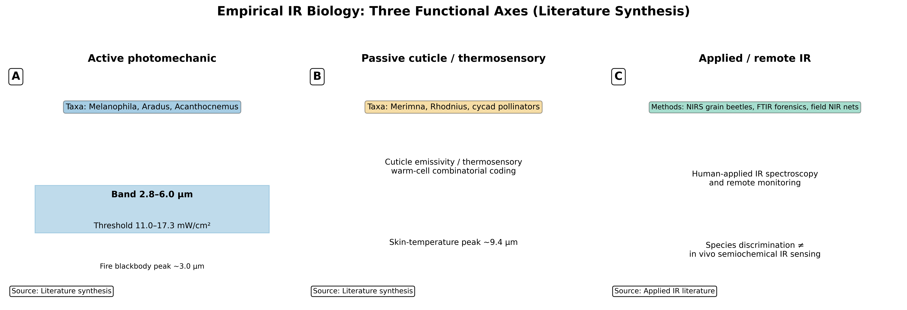
Three evolutionary pressures recur:
Mechanistic diversity argues for IR detection as a recurrently co-opted modality rather than a single ancestral insect IR module.
Photomechanic Melanophila sensilla and Acanthocnemus microbolometers inform uncooled biomimetic MIR sensor design [@schmitz2011infrared; @siebke2014biomimetic]. Mosquito TRPA1 biology suggests skin-temperature IR sources may improve trap designs when combined with odor and CO₂ [@chandel2024thermal]. Potamitis et al.’s NIR sensor networks enable high-temporal-resolution monitoring relative to trap-based sampling [@potamitis2022monitoring].
src/core.py::calculate_atmospheric_transmission;
src/case_studies/environmental_channel.py.This appendix maps CohereAnts computational modules onto the Ant Stack three-layer framework (AntBody, AntBrain, AntMind) as a sensor-fusion control model, not a mind/brain metaphor. The stack coordinates physical sensing (sensilla IR models), state estimation (channel capacity), and action selection (active inference demos) for protocol design and assay simulation.
# AntBody sensilla configuration (adapter pattern)
class AntBodySensilla:
def __init__(self, species_preset: str):
# Load species-specific sensilla parameters via CohereAnts presets
self.lengths = load_sensilla_lengths(species_preset)
self.diameters = load_sensilla_diameters(species_preset)
# Delegate resonance calculation to tested src utilities
from src.sensilla import calculate_wavelength_matching
self.optimal_wavelengths = calculate_wavelength_matching(self.lengths, self.diameters)
def export_io(self) -> dict:
return {
'lengths_um': self.lengths,
'diameters_um': self.diameters,
'optimal_wavelengths_um': self.optimal_wavelengths,
}I/O Contract: - Observations: Sensilla dimensions (\(\mu\mathrm{m}\)), resonance frequencies (THz), quality factors - Actions: Antenna positioning, sensilla orientation - Physics: 1 kHz update rate, contact dynamics for substrate interaction
Integration of CohereAnts atmospheric transmission models:
class AntBodySpectroscopy:
def __init__(self, environment_preset: str):
self.transmission_curves = load_atmospheric_data(environment_preset)
self.spectral_resolution = 0.01 # um
def get_transmission(self, wavelength: float, distance: float) -> float:
# Delegate to CohereAnts atmospheric transmission model in src/core
return calculate_atmospheric_transmission(wavelength, distance)Configuration Parameters: - Atmospheric windows: 2-5 \(\mu\mathrm{m}\), 8-14 \(\mu\mathrm{m}\), 17-25 \(\mu\mathrm{m}\) - Transmission coefficients: 0.7-0.9 for optimal windows - Distance-dependent attenuation models
Layer handoff: AntBody exports wavelength-dependent transmission, sensilla resonance estimates, and spectral features as observation tensors. AntBrain consumes those tensors as channel inputs for encoding and discrimination models; it does not imply a literal insect central nervous system implementation.
Mapping CohereAnts vibrational theory to AntBrain’s AL→MB→CX architecture:
class AntBrainOlfaction:
def __init__(self, neuron_count: int = 100000):
# Antennal Lobe (AL) - odor coding
self.al_neurons = self._initialize_al_circuit()
# Mushroom Body (MB) - associative learning
self.mb_neurons = self._initialize_mb_circuit()
# Central Complex (CX) - spatial integration
self.cx_neurons = self._initialize_cx_circuit()
def _initialize_al_circuit(self):
# Delegate vibrational detection to src components in production
# Each glomerulus responds to specific molecular vibrations
return VibrationalGlomeruliCircuit()
def _initialize_mb_circuit(self):
# Kenyon cells for odor-memory associations
return KenyonCellCircuit()
def _initialize_cx_circuit(self):
# Ring attractor for heading representation
return RingAttractorCircuit()Neural Implementation Details: - AL Layer: 50 glomeruli, each tuned to specific vibrational frequencies - MB Layer: 2500 Kenyon cells with sparse coding (5% activity) - CX Layer: 16-heading ring attractor with 100 neurons per heading
Implementation of CohereAnts electromagnetic theory:
class VibrationalGlomeruliCircuit:
def __init__(self):
self.frequency_tuning = np.linspace(2, 25, 50) # um to THz
self.quality_factors = np.ones(50) * 100
def process_spectral_input(self, spectral_data: np.ndarray) -> np.ndarray:
# Implement CohereAnts resonance detection
responses = np.zeros(50)
for i, freq in enumerate(self.frequency_tuning):
responses[i] = self._calculate_vibrational_response(spectral_data, freq)
return responses
def _calculate_vibrational_response(self, spectrum: np.ndarray,
resonant_freq: float) -> float:
# Placeholder: call src electromagnetic coupling utilities in production
coupling_strength = self._calculate_coupling(spectrum, resonant_freq)
return coupling_strength * self.quality_factors[i]Layer handoff: AntBrain maps encoded spectral and timing features to population responses and information metrics (see ). AntMind applies policy steps—active inference demos in —to simulate search trajectories under IR cue beliefs. This is a control-theoretic stack for protocol design, not a claim about insect cognition.
Integration of CohereAnts behavioral models with active inference:
class AntMindOlfaction:
def __init__(self):
self.generative_model = self._build_olfactory_model()
self.policy_horizon = 2.0 # seconds
def _build_olfactory_model(self):
# Implement CohereAnts behavioral predictions
return OlfactoryGenerativeModel()
def select_policy(self, current_state: Dict) -> np.ndarray:
# Active inference policy selection
expected_free_energy = self._calculate_efe()
return self._minimize_free_energy(expected_free_energy)
def _calculate_efe(self) -> Dict[str, float]:
# Decompose into epistemic and pragmatic value
return {
'epistemic': self._calculate_epistemic_value(),
'pragmatic': self._calculate_pragmatic_value()
}Implementation of CohereAnts pheromone dynamics:
class AntMindStigmergy:
def __init__(self):
self.pheromone_field = np.zeros((100, 100))
self.decay_rate = 0.01
self.diffusion_coefficient = 0.1
def update_pheromone_field(self, deposits: List[Tuple[int, int, float]]):
# Implement CohereAnts pheromone diffusion model
for x, y, amount in deposits:
self.pheromone_field[x, y] += amount
# Apply diffusion and decay
self.pheromone_field = self._diffuse_and_decay()
def _diffuse_and_decay(self) -> np.ndarray:
# Fick's law implementation from CohereAnts
laplacian = self._calculate_laplacian(self.pheromone_field)
diffusion = self.diffusion_coefficient * laplacian
decay = -self.decay_rate * self.pheromone_field
return self.pheromone_field + diffusion + decay# Formica species preset for Ant Stack
FORMICA_PRESET = {
'body': {
'sensilla_lengths': [15.2, 18.7, 22.1, 19.8, 16.5], # um
'sensilla_diameters': [2.1, 2.8, 3.2, 2.9, 2.3], # um
'optimal_wavelengths': [60.8, 74.8, 88.4, 79.2, 66.0], # um
'antenna_length': 2.5, # mm
'leg_count': 6,
'body_mass': 0.015 # g
},
'brain': {
'al_glomeruli_count': 50,
'mb_kenyon_cells': 2500,
'cx_heading_resolution': 16,
'spiking_threshold': 0.1,
'learning_rate': 0.01
},
'mind': {
'policy_horizon': 2.0, # seconds
'pheromone_decay': 0.01,
'diffusion_coefficient': 0.1,
'exploration_rate': 0.2
}
}# Camponotus species preset for Ant Stack
CAMPONOTUS_PRESET = {
'body': {
'sensilla_lengths': [22.5, 28.1, 31.7, 26.8, 24.3], # um
'sensilla_diameters': [3.2, 4.1, 4.8, 4.2, 3.6], # um
'optimal_wavelengths': [90.0, 112.4, 126.8, 107.2, 97.2], # um
'antenna_length': 3.8, # mm
'leg_count': 6,
'body_mass': 0.045 # g
},
'brain': {
'al_glomeruli_count': 60,
'mb_kenyon_cells': 3000,
'cx_heading_resolution': 20,
'spiking_threshold': 0.08,
'learning_rate': 0.015
},
'mind': {
'policy_horizon': 2.5, # seconds
'pheromone_decay': 0.008,
'diffusion_coefficient': 0.12,
'exploration_rate': 0.15
}
}class AntStackEvaluator:
def __init__(self, test_scenarios: List[str]):
self.scenarios = test_scenarios
self.metrics = {}
def evaluate_navigation(self, ant_stack: AntStack) -> Dict[str, float]:
results = {}
for scenario in self.scenarios:
if scenario == 'trail_following':
results[scenario] = self._evaluate_trail_following(ant_stack)
elif scenario == 'food_search':
results[scenario] = self._evaluate_food_search(ant_stack)
elif scenario == 'nest_return':
results[scenario] = self._evaluate_nest_return(ant_stack)
return results
def _evaluate_trail_following(self, ant_stack: AntStack) -> float:
# Implement CohereAnts trail following metrics (calls src/behavioral metrics)
trail_deviation = self._calculate_trail_deviation()
pheromone_detection = self._calculate_pheromone_detection()
return self._combine_metrics([trail_deviation, pheromone_detection])
def _evaluate_food_search(self, ant_stack: AntStack) -> float:
# Implement CohereAnts search efficiency metrics (calls src/behavioral metrics)
search_time = self._measure_search_time()
energy_efficiency = self._calculate_energy_efficiency()
return self._combine_metrics([search_time, energy_efficiency])class RobustnessTester:
def __init__(self):
self.noise_levels = [0.01, 0.05, 0.1, 0.2]
self.adversary_types = ['sensor_noise', 'pheromone_contamination', 'path_obstruction']
def test_noise_robustness(self, ant_stack: AntStack) -> Dict[str, float]:
results = {}
for noise_level in self.noise_levels:
performance = self._run_noisy_scenario(ant_stack, noise_level)
results[f'noise_{noise_level}'] = performance
return results
def test_adversary_robustness(self, ant_stack: AntStack) -> Dict[str, float]:
results = {}
for adversary in self.adversary_types:
performance = self._run_adversarial_scenario(ant_stack, adversary)
results[f'adversary_{adversary}'] = performance
return resultsant_stack_cohereants/
├── antbody/
│ ├── sensilla_physics.py # CohereAnts vibrational theory
│ ├── spectroscopy_sensors.py # atmospheric transmission models
│ └── morphology_models.py # species-specific parameters
├── antbrain/
│ ├── olfactory_circuits.py # AL→MB→CX implementation
│ ├── vibrational_detection.py # electromagnetic coupling
│ └── learning_mechanisms.py # STDP and plasticity
├── antmind/
│ ├── olfactory_inference.py # active inference models
│ ├── stigmergy_models.py # pheromone dynamics
│ └── behavioral_policies.py # search and navigation
├── presets/
│ ├── formica_config.py # Formica species preset
│ ├── camponotus_config.py # Camponotus species preset
│ └── custom_species.py # Template for new species
└── evaluation/
├── navigation_tests.py # Trail following, search
├── robustness_tests.py # Noise, adversary testing
└── performance_metrics.py # Standardized benchmarksThe integration of CohereAnts research into the Ant Stack framework provides a robust, reproducible platform for studying ant intelligence. By mapping our vibrational theory of olfaction, spectroscopic analysis, and behavioral modeling to the standardized three-layer architecture, we create a comprehensive system that bridges theoretical insights with computational implementation.
This implementation enables systematic exploration of ant behavior across species, environments, and experimental conditions while maintaining the biological plausibility that underpins our research. The modular design facilitates both hypothesis testing in myrmecology and applications in swarm robotics, cognitive security, and AI alignment.
Key Contributions: 1. Systematic Integration: Methodical mapping of CohereAnts to Ant Stack layers 2. Species Parameterization: Reproducible configurations for multiple ant taxa 3. Evaluation Framework: Standardized metrics and robustness testing 4. Implementation Workflow: Clear development pipeline and code organization 5. Future Roadmap: Extensibility and validation pathways
The resulting framework serves as a bridge between theoretical entomology and computational neuroscience, enabling reproducible research that advances our understanding of both natural ant intelligence and artificial intelligence systems.
The Earth’s atmosphere has specific wavelength ranges where infrared radiation travels with lower absorption. In this project these windows define candidate propagation bands for model testing; they do not by themselves prove long-range detection of insect semiochemicals [@gordon2022hitran].
Transmission function: Modeled by
src/core.py::calculate_atmospheric_transmission() as a
coarse window function and by appendix case-study utilities for
sensitivity analysis (see \(\eqref{eq:atmospheric_transmission}\); unit
tests in tests/test_core.py):
\[\begin{equation} T(\lambda) = \exp\left[-\sum_i \alpha_i(\lambda) L_i\right] \label{eq:transmission_function_gloss} \end{equation}\]
where \(\alpha_i(\lambda)\) is the absorption coefficient and \(L_i\) is the path length through atmospheric component \(i\).
Insect sensilla have micron-scale dimensions that can be compared to IR wavelength estimates. The current evidence supports morphology-based candidate screening, while direct resonance tuning remains an experimental prediction [@liu2021thripidae]:
Wavelength matching: Analyzed by
src/sensilla.py::analyze_sensilla_dimensions() against
representative morphometric ranges; see resonant frequency \(\eqref{eq:resonant_freq_gloss}\) and tests
tests/test_sensilla.py. Publication figures are generated
via scripts/generate_research_figures.py.
Resonant Frequency: The fundamental resonant frequency of a sensillum is:
\[\begin{equation} f_{res} = \frac{c}{2\pi} \sqrt{\left(\frac{\alpha_{mn}}{a}\right)^2 + \left(\frac{p\pi}{L}\right)^2} \label{eq:resonant_freq_gloss} \end{equation}\]
where \(c\) is the speed of light, \(\alpha_{mn}\) is the Bessel function root, and \(a\) and \(L\) are the radius and length.
Different sensory modalities exhibit characteristic response times that reflect their underlying mechanisms:
Response time analysis: Compared using
src/core.py::calculate_response_time_improvement(); see
tests/test_core.py::TestResponseTimeImprovement. See
../figures/response_time_comparison.png and cf. \(\eqref{eq:response_time_components}\).
IR-specific timing is an experimental target, not an established
value.
The vibrational theory incorporates advanced signal processing concepts:
\[\begin{equation} C = B \log_2(1 + SNR) \label{eq:channel_capacity_gloss} \end{equation}\]
where \(B\) is the bandwidth and \(SNR\) is the signal-to-noise ratio.
\[\begin{equation} P_{min} = k_B T \Delta f \cdot SNR_{min} \label{eq:min_power_gloss} \end{equation}\]
where \(k_B\) is Boltzmann’s constant, \(T\) is temperature, \(\Delta f\) is bandwidth, and \(SNR_{min}\) is the minimum required signal-to-noise ratio.
All mathematical concepts and equations presented in this manuscript are implemented in tested source code that generates the visualizations and analyses embedded throughout. The key functions include:
calculate_atmospheric_transmission():
Implements atmospheric transmission models with environmental parameter
integrationcalculate_response_time_improvement():
Compares response times across different sensory modalities with
statistical validationcalculate_wavelength_from_wavenumber():
Converts between wavelength and wavenumber representationssafe_division(): Performs safe
division operations with error handlinganalyze_sensilla_dimensions():
Analyzes sensilla morphology and calculates optimal detection
wavelengthscalculate_sensilla_resonance_frequency():
Computes resonant frequencies using cavity resonator theorycalculate_wavelength_matching():
Quantifies wavelength matching between sensilla and incident
radiationgenerate_sensilla_visualization():
Creates detailed visualizations of sensilla structures and
propertiesanalyze_chc_spectra(): Processes
cuticular hydrocarbon spectroscopic data with peak detectioncalculate_spectral_overlap():
Quantifies spectral similarity between different compoundsgenerate_spectral_plots(): Creates
publication-quality spectral visualizationsidentify_chc_compounds(): Identifies
potential CHC compounds based on peak positionsanalyze_behavioral_response():
Analyzes behavioral response data with statistical testingcalculate_power_analysis(): Performs
statistical power analysis for experimental designcalculate_response_statistics():
Computes comprehensive statistics for response datagenerate_behavioral_plots(): Creates
behavioral response visualizationsIntegratedAnalyzer: Combines multiple
analytical approaches for comprehensive assessmentMetaMaterialAnalyzer: Analyzes
meta-material properties and quantum effectsFermiEstimator: Performs Fermi
estimation for order-of-magnitude calculationsBehavioralAnalyzer: Specialized
analysis for behavioral response datavalidate_numeric_inputs(): Ensures all
numeric inputs are valid and finite (exercised in multiple unit
tests)SensillaData: Container class for
sensilla measurements with validationSpectralData: Container class for
spectral data with analysis methodsBehavioralData: Container class for
behavioral data with statistical analysisFor detailed discussions of the concepts presented here, see:
The complete computational framework is documented with (appendix case studies: , , , , , , and ):
src/
coverage gateFor complete mathematical formulations and source code implementation, see Section . Cross-links to implementations and unit tests are included therein.
| Module | Name | Kind | Summary |
|---|---|---|---|
__init__ |
get_package_info |
function | Get comprehensive package information |
__init__ |
run_demo_analysis |
function | Run a demonstration analysis using all available frameworks |
ant_stack.antbody |
AntBodySensilla |
class | Sensilla configuration using CohereAnts morphology analysis |
ant_stack.antbody |
AntBodySpectroscopy |
class | Atmospheric transmission access aligned with core calculations |
ant_stack.antbrain |
AntBrainOlfaction |
class | High-level olfactory pipeline stub with AL→MB→CX placeholders |
ant_stack.antbrain |
VibrationalGlomeruliCircuit |
class | Bank of resonant channels tuned across 2–25 μm |
ant_stack.antmind |
AntMindOlfaction |
class | Active-inference-like placeholder for olfactory policy selection |
ant_stack.antmind |
AntMindStigmergy |
class | Grid-based pheromone field with diffusion and decay |
behavioral |
BehavioralAnalyzer |
class | Main analyzer for behavioral response data |
behavioral |
BehavioralData |
class | Container for behavioral response data with validation |
behavioral |
StatisticalAnalyzer |
class | Statistical analysis for behavioral data |
behavioral |
analyze_behavioral_response |
function | Analyze behavioral response data |
behavioral |
calculate_power_analysis |
function | Calculate statistical power for the comparison |
behavioral |
calculate_response_statistics |
function | Calculate comprehensive statistics for behavioral response data |
behavioral |
generate_behavioral_plots |
function | Generate behavioral response plots |
case_studies.active_inference |
olfactory_active_inference_step |
function | Minimal deterministic update step for a 2D position under a gradient cue |
case_studies.detection_limits |
detection_performance_vs_snr |
function | Analyze detection performance vs signal-to-noise ratio |
case_studies.detection_limits |
detection_range_analysis |
function | Analyze detection range for IR olfactory communication |
case_studies.detection_limits |
min_detectable_power |
function | Minimum detectable signal power using thermal noise floor and SNR threshold |
case_studies.detection_limits |
noise_floor_analysis |
function | Analyze noise floor components vs frequency |
case_studies.detection_limits |
operating_point |
function | Bundle operating point parameters deterministically |
case_studies.detection_limits |
operating_regions_analysis |
function | Analyze operating regions in power-temperature space |
case_studies.detection_limits |
optimize_detection_parameters |
function | Optimize detection system parameters for given constraints and objectives |
case_studies.detection_limits |
roc_analysis |
function | Receiver Operating Characteristic (ROC) analysis for signal detection |
case_studies.detection_limits |
sensitivity_analysis |
function | Sensitivity analysis of detection performance to parameter variations |
case_studies.detection_limits |
snr_curve |
function | SNR vs |
case_studies.environmental_channel |
atmospheric_transmission_comprehensive |
function | Comprehensive atmospheric transmission model with multiple physical effects |
case_studies.environmental_channel |
atmospheric_transmission_detailed |
function | Compute a simple parametric atmospheric transmission curve |
case_studies.environmental_channel |
channel_capacity_analysis |
function | Analyze communication channel capacity under atmospheric conditions |
case_studies.environmental_channel |
channel_capacity_vs_env |
function | Map Shannon capacity across humidity×temperature grid (legacy function) |
case_studies.environmental_channel |
environmental_sensitivity_analysis |
function | Analyze sensitivity of transmission to environmental parameters |
case_studies.environmental_channel |
molecular_absorption_cross_section |
function | Calculate molecular absorption cross-sections for atmospheric constituents |
case_studies.environmental_channel |
optimize_wavelength_for_range |
function | Find optimal wavelengths for target communication range and capacity |
case_studies.environmental_channel |
rayleigh_scattering_coefficient |
function | Calculate Rayleigh scattering coefficient for dry air |
case_studies.neural_encoding |
adaptation_dynamics_analysis |
function | Analyze adaptation dynamics in neural responses |
case_studies.neural_encoding |
analyze_spike_train_statistics |
function | Compute comprehensive spike train statistics |
case_studies.neural_encoding |
generate_spike_trains |
function | Generate realistic spike trains for ORN responses to odor stimuli |
case_studies.neural_encoding |
information_rate_time_series |
function | Estimate information metrics using a Gaussian channel approximation |
case_studies.neural_encoding |
mutual_information_analysis |
function | Compute mutual information between neural responses and stimuli |
case_studies.neural_encoding |
odor_discrimination_analysis |
function | Analyze odor discrimination performance across different time windows |
case_studies.neural_encoding |
population_coding_analysis |
function | Analyze population coding efficiency across multiple ORNs |
case_studies.neural_encoding |
rate_coding_metrics |
function | Compute simple separability metrics (means/stds) deterministically |
case_studies.neural_encoding |
temporal_coding_analysis |
function | Analyze temporal coding precision and response latency |
case_studies.plasmonic_geometry |
coupled_dipoles_near_field |
function | Calculate near-field enhancement for coupled plasmonic nanoparticles |
case_studies.plasmonic_geometry |
drude_model_permittivity |
function | Calculate frequency-dependent permittivity using Drude model |
case_studies.plasmonic_geometry |
field_distribution_near_particle |
function | Calculate near-field distribution around a spherical nanoparticle |
case_studies.plasmonic_geometry |
mie_scattering_sphere |
function | Calculate Mie scattering properties for spherical nanoparticles |
case_studies.plasmonic_geometry |
optimize_plasmonic_geometry |
function | Optimize nanoparticle geometry for maximum enhancement at target wavelength |
case_studies.plasmonic_geometry |
sweep_plasmonic_quality |
function | Comprehensive sweep of plasmonic quality factors across size and wavelength |
case_studies.sensilla_array_directionality |
analyze_sensilla_morphology |
function | Analyze sensilla dimensions for resonant wavelength matching |
case_studies.sensilla_array_directionality |
array_gain |
function | Compute a scalar array gain proxy as peak-to-mean power ratio |
case_studies.sensilla_array_directionality |
array_pattern_2d |
function | Compute 2D radiation pattern for sensilla array across frequency range |
case_studies.sensilla_array_directionality |
compute_beam_pattern |
function | Compute a simplified 1D beam pattern over wavelengths |
case_studies.sensilla_array_directionality |
design_circular_array |
function | Design a circular antenna array representing sensilla on insect antennae |
case_studies.sensilla_array_directionality |
design_log_periodic_array |
function | Design a 1D log-periodic array of element positions |
case_studies.sensilla_array_directionality |
frequency_response_analysis |
function | Analyze frequency response characteristics of sensilla array |
case_studies.sensilla_array_directionality |
mutual_coupling_matrix |
function | Compute mutual coupling matrix between antenna elements |
case_studies.sensilla_array_directionality |
sensilla_element_pattern |
function | Individual sensillum radiation pattern as function of observation angle |
case_studies.spectral_unmixing |
advanced_classification_suite |
function | Comprehensive classification analysis using multiple algorithms |
case_studies.spectral_unmixing |
generate_realistic_chc_spectra |
function | Generate realistic CHC spectral data with known ground truth components |
case_studies.spectral_unmixing |
independent_component_analysis_spectra |
function | Independent Component Analysis (ICA) for blind source separation of spectra |
case_studies.spectral_unmixing |
lda_baseline |
function | Closed-form two-class LDA with equal covariance; returns accuracy on train |
case_studies.spectral_unmixing |
nmf_unmix |
function | Deterministic, simple NMF via multiplicative updates |
case_studies.spectral_unmixing |
performance_metrics_comprehensive |
function | Compute comprehensive performance metrics for classification |
case_studies.spectral_unmixing |
spectral_feature_extraction |
function | Extract discriminative features from spectral data |
case_studies.spectral_unmixing |
vertex_component_analysis |
function | Vertex Component Analysis (VCA) for endmember extraction |
config |
ConfigManager |
class | Centralized configuration manager for insect analysis |
config |
enable_verbose_logging |
function | Enable verbose logging for debugging |
config |
get_config |
function | Get the global configuration manager instance |
config |
init_config |
function | Initialize the global configuration manager |
config |
set_plot_style |
function | Set matplotlib plot style |
config |
set_random_seed |
function | Set random seed for reproducible results |
config |
set_temperature |
function | Set analysis temperature in Kelvin |
core |
calculate_atmospheric_transmission |
function | Calculate atmospheric transmission for given wavelengths in the infrared spectrum |
core |
calculate_response_time_improvement |
function | Calculate the improvement in response time compared to traditional olfaction |
core |
calculate_wavelength_from_wavenumber |
function | Convert wavenumber (cm⁻¹) to wavelength (μm) |
core |
calculate_wavenumber_from_wavelength |
function | Convert wavelength (μm) to wavenumber (cm^-1) |
core |
safe_division |
function | Safely perform division, returning infinity if denominator is zero |
core |
validate_numeric_inputs |
function | Validate that all numeric inputs are finite numbers |
fermi_estimation |
FermiEstimator |
class | Comprehensive Fermi Estimation analyzer for olfaction and infrared sensing |
fermi_estimation |
create_sample_fermi_analysis |
function | Create a sample Fermi analysis for demonstration |
glossary_gen |
ApiEntry |
class | Represents a public API entry from source code |
glossary_gen |
build_api_index |
function | Scan src_dir and collect public functions/classes with
summaries |
glossary_gen |
generate_markdown_table |
function | Generate a Markdown table from API entries |
glossary_gen |
inject_between_markers |
function | Replace content between begin_marker and end_marker (inclusive markers preserved) |
insect_analysis |
run_comprehensive_analysis |
function | Run comprehensive analysis using all available frameworks |
integrated_analysis |
IntegratedAnalyzer |
class | Integrated analyzer combining Fermi Estimation and meta-material frameworks |
integrated_analysis |
create_sample_integrated_analysis |
function | Create a sample integrated analysis for demonstration |
meta_material_framework |
MetaMaterialAnalyzer |
class | Comprehensive meta-material analyzer for olfaction and infrared sensing |
meta_material_framework |
create_sample_metamaterial_analysis |
function | Create a sample meta-material analysis for demonstration |
sensilla |
SensillaData |
class | Container for sensilla measurement data with validation |
sensilla |
analyze_sensilla_dimensions |
function | Analyze sensilla dimensions and calculate optimal detection wavelengths |
sensilla |
calculate_sensilla_resonance_frequency |
function | Calculate the fundamental resonance frequency of a sensillum |
sensilla |
calculate_wavelength_matching |
function | Calculate wavelength matching between sensilla dimensions and incident radiation |
sensilla |
generate_sensilla_visualization |
function | Generate a visualization of sensilla dimensions and optimal wavelengths |
spectroscopy |
CHCAnalyzer |
class | Analyzer for cuticular hydrocarbon spectra |
spectroscopy |
PeakFinder |
class | Peak detection and analysis for spectral data |
spectroscopy |
SpectralData |
class | Container for spectral data with validation and analysis methods |
spectroscopy |
analyze_chc_spectra |
function | Analyze cuticular hydrocarbon (CHC) infrared spectra |
spectroscopy |
calculate_spectral_overlap |
function | Calculate spectral overlap between two spectra |
spectroscopy |
generate_spectral_plots |
function | Generate spectral plots for multiple compounds |
spectroscopy |
identify_chc_compounds |
function | Identify potential CHC compounds based on peak positions |
visualization |
AdvancedVisualizer |
class | Advanced visualization tools for insect analysis data |
visualization |
PlotStyler |
class | Advanced plot styling and theming system |
visualization |
create_accessible_figure |
function | Create a figure with accessibility-oriented styling options |
visualization |
create_publication_figure |
function | Create a publication-ready figure with optimal styling |
visualization |
create_subplots |
function | Create subplots with enhanced accessibility and consistent styling |
visualization |
get_colorblind_palette |
function | Get a colorblind-friendly color palette |
visualization |
set_plot_style |
function | Set the global plot style |
Demonstrate a deterministic active-inference step for olfactory search under IR cues.
The demo shows how a minimal belief-update policy could navigate a grid when IR cue strength varies spatially. It supports assay design—what information a searcher would need from wavelength-specific cues—not field ethology. Outputs should be read alongside preregistered behavioral falsifiers in .
is a deterministic trajectory from
src/behavioral_models.py; it is not evidence that insects
perform active inference on semiochemical IR gradients.
src/behavioral_models.py
olfactory_active_inference_step(state, params) —
deterministic single‑step update used in the demoscripts/generate_active_inference_demo.pyoutput/data/active_inference_demo.npz../figures/active_inference_trajectory.png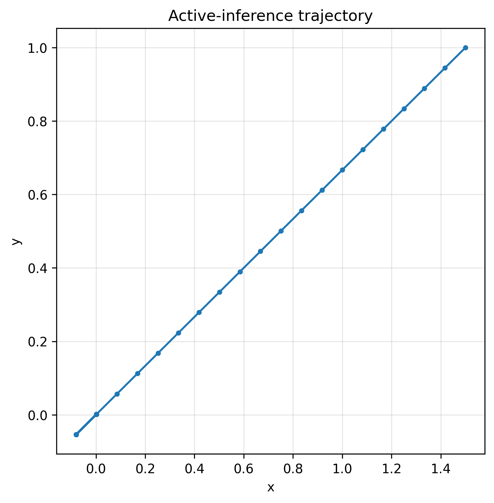
python3 scripts/generate_active_inference_demo.pyoutput/data/ and
../figures/.src/config.set_random_seed(42) for
deterministic policy traces.src/ policy utilities without embedding
scientific logic in the script.Comprehensive detection-theory analysis with model operating points informed by electrophysiology literature anchors (not direct re-analysis of raw spike trains): ROC curves for millisecond-scale latency targets, sensitivity analysis for sub-10 ms ORN responses, operating regions in power-temperature space, and noise-floor characterization distinguishing electromagnetic from thermal effects for IR sensor bounds.
Panels map literature-anchored SNR and power thresholds into ROC and operating-region plots. They answer whether a proposed IR stage could exceed thermal noise under stated assumptions, not whether insects operate at those points in nature.
bounds sensor feasibility; it does not establish biological IR olfaction or measured insect detection ranges.
src/case_studies/detection_limits.py
min_detectable_power(temperature_k, bandwidth_hz, snr_min_db)
— thermal‑noise‑limited detectionroc_analysis(signal_power, noise_power) — ROC curves
and optimal thresholdsdetection_performance_vs_snr(snr_range_db, pfa_target)
— performance curves and MDSsensitivity_analysis(power_range, temp_range, param_variations)
— parameter sensitivityoperating_regions_analysis(power_range, temp_range) —
SNR contours in operating spacenoise_floor_analysis(freq_range, temperature_k) —
multi‑component noise analysisdetection_range_analysis(tx_power, antenna_gain, frequency, sensitivity)
— range calculationsoptimize_detection_parameters(constraints, objectives)
— system optimizationscripts/generate_detection_limits.pyoutput/data/detection_limits_comprehensive.npz../figures/detection_limits_comprehensive_analysis.png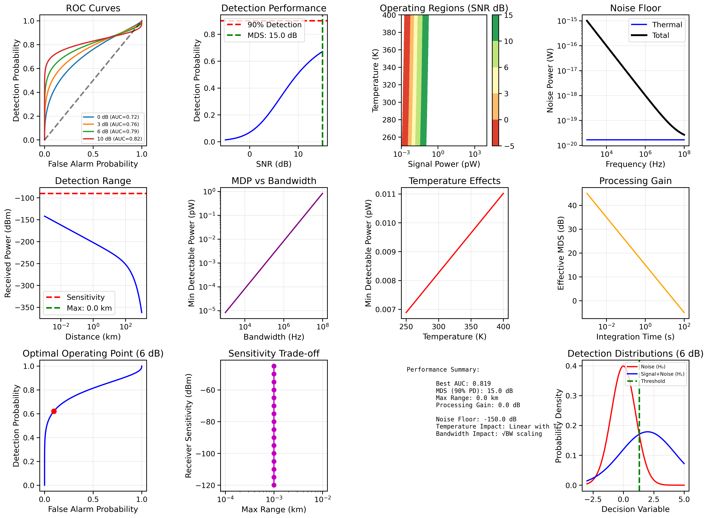
python3 scripts/generate_detection_limits.pyoutput/data/ and
../figures/.src/config.set_random_seed(42).Comprehensive atmospheric channel modeling benchmarked against atmospheric spectroscopy concepts: molecular absorption (HO, CO, CH, O), Rayleigh scattering, aerosol effects, channel-capacity mapping with 8-14 \(\mu\mathrm{m}\) window emphasis, wavelength optimization over selected ranges, and environmental sensitivity analysis for candidate IR communication scenarios [@gordon2022hitran].
The case study compares how humidity, temperature, and path length shift usable windows and Shannon capacity under simplified atmospheric models. Results inform where narrowband signatures could propagate, complementing without replacing line-by-line radiative transfer.
reports engineering channel bounds under modeled conditions; it is not a measured insect communication range.
src/case_studies/environmental_channel.py
molecular_absorption_cross_section(wavelengths, molecule_type)
— H2O, CO2, CH4 absorptionrayleigh_scattering_coefficient(wavelengths, air_density)
— molecular scatteringatmospheric_transmission_comprehensive(wavelengths, conditions)
— multi‑component transmissionchannel_capacity_analysis(wavelengths, environmental_conditions)
— Shannon capacity mappingoptimize_wavelength_for_range(target_range, capacity_requirements)
— wavelength selectionenvironmental_sensitivity_analysis(parameter_variations)
— parameter sensitivityatmospheric_transmission_detailed(wavelengths, humidity, temperature, path)
— basic transmission utilitychannel_capacity_vs_env(material_props, env_grid) —
grid mapping of capacity vs environmentscripts/generate_environmental_channel_analysis.pyoutput/data/environmental_channel_comprehensive.npz../figures/environmental_channel_comprehensive_analysis.png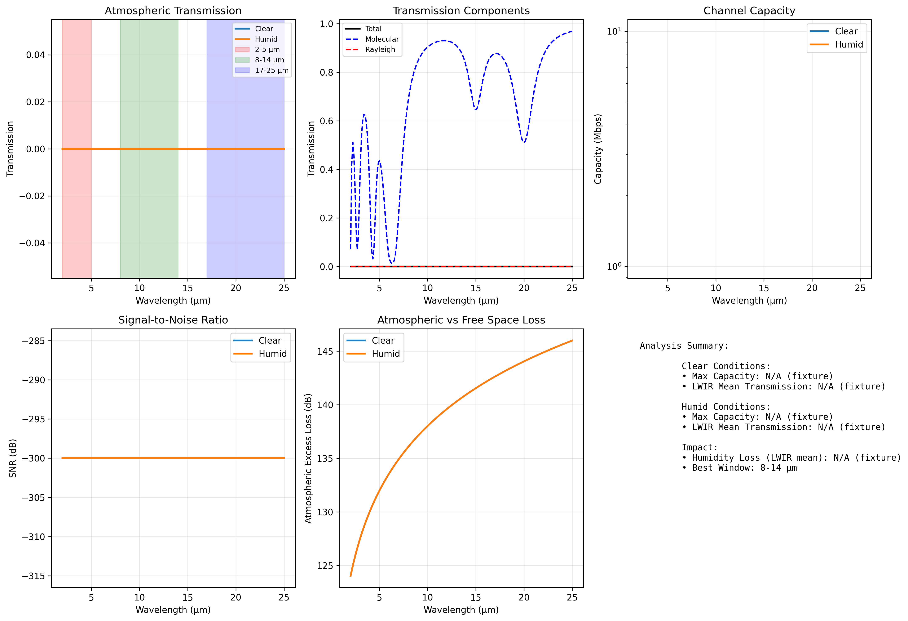

python3 scripts/generate_environmental_channel_analysis.pyoutput/data/ and
../figures/.src/config.set_random_seed(42).Some insects exhibit sensitivity to thermal IR in natural behaviors. Aedes aegypti integrates thermal IR around the human skin-temperature spectrum with other host cues [@chandel2024thermal]. Rhodnius prolixus discriminates radiant IR from convective heat via antennal warm-cell combinatorial coding; forced convection disrupts that quotient [@zopf2014infrared; @zopf2015convection]. Lazzari reviewed how radiant IR operates at longer range than convective heat near hosts [@lazzari2009orientation]. These behavioral constraints complement the electromagnetic window analysis and motivate species- and wavelength-specific range predictions.
Comprehensive neural encoding analysis including spike‑train generation, temporal dynamics, population coding, mutual information, and adaptation mechanisms for olfactory receptor neurons.
Synthetic spike trains and population metrics explore how fast ORN-like encoders could carry timing information if an IR-sensitive stage existed. The analysis separates already-fast molecular latencies from hypothetical sub-millisecond components that falsifier 4 in targets.
uses generated time series; it does not reanalyze published electrophysiology recordings or prove IR transduction.
src/case_studies/neural_encoding.py
generate_spike_trains(stimuli, dt, baseline_rate, max_rate, dynamics)
— realistic spike generationanalyze_spike_train_statistics(spike_data) — ISI, CV,
Fano factortemporal_coding_analysis(spike_data, stimulus_times) —
latency and precision metricspopulation_coding_analysis(population_responses, labels)
— PCA, LDA, correlation structuremutual_information_analysis(responses, stimuli) —
information‑theoretic metricsodor_discrimination_analysis(responses, odor_ids, time_windows)
— discrimination performanceadaptation_dynamics_analysis(spike_data, stimulus_duration)
— adaptation characterizationinformation_rate_time_series(responses, dt_s, noise_std)
— channel‑capacity estimationrate_coding_metrics(responses, labels) — separability
and discriminability metricsscripts/generate_neural_encoding_analysis.pyoutput/data/neural_encoding_comprehensive.npz../figures/neural_encoding_comprehensive_analysis.png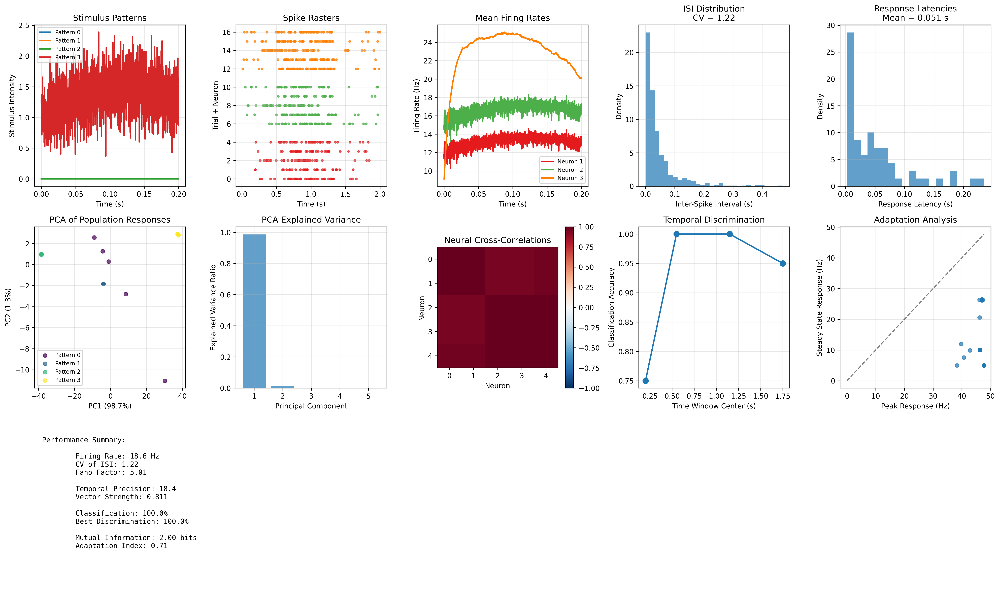
python3 scripts/generate_neural_encoding_analysis.pyoutput/data/ and
../figures/.src/config.set_random_seed(42) for
surrogate time‑series.Comprehensive plasmonic nanostructure analysis: frequency-dependent permittivity (Drude), Mie scattering, coupled‑dipole near‑field interactions, geometry optimization, and field‑enhancement mapping for receptor‑scale enhancement.
Sweeps identify nanoparticle sizes and materials that maximize near-field enhancement at MIR wavelengths relevant to biomimetic bands 2.8–6 µm. Results inform whether receptor-scale structures could, in principle, boost weak narrowband signals—not whether insects employ plasmonics in sensilla.
bounds sensor-design feasibility; it does not establish biological IR olfaction.
src/case_studies/plasmonic_geometry.py
drude_model_permittivity(frequency_hz, metal_type) —
material permittivity modelmie_scattering_sphere(radius_m, wavelength_m, eps_particle, eps_medium)
— Mie solutionscoupled_dipoles_near_field(positions, polarizabilities, wavelength)
— multi‑particle interactionsoptimize_plasmonic_geometry(wavelength_range, constraints)
— geometry optimizationfield_distribution_near_particle(particle_params, grid_points)
— near‑field mapssweep_plasmonic_quality(radii_m, metal_eps, medium_eps)
— parameter sweeps for Q‑factor analysisscripts/generate_plasmonic_geometry_sweep.pyoutput/data/plasmonic_geometry_comprehensive.npz../figures/plasmonic_geometry_comprehensive_analysis.png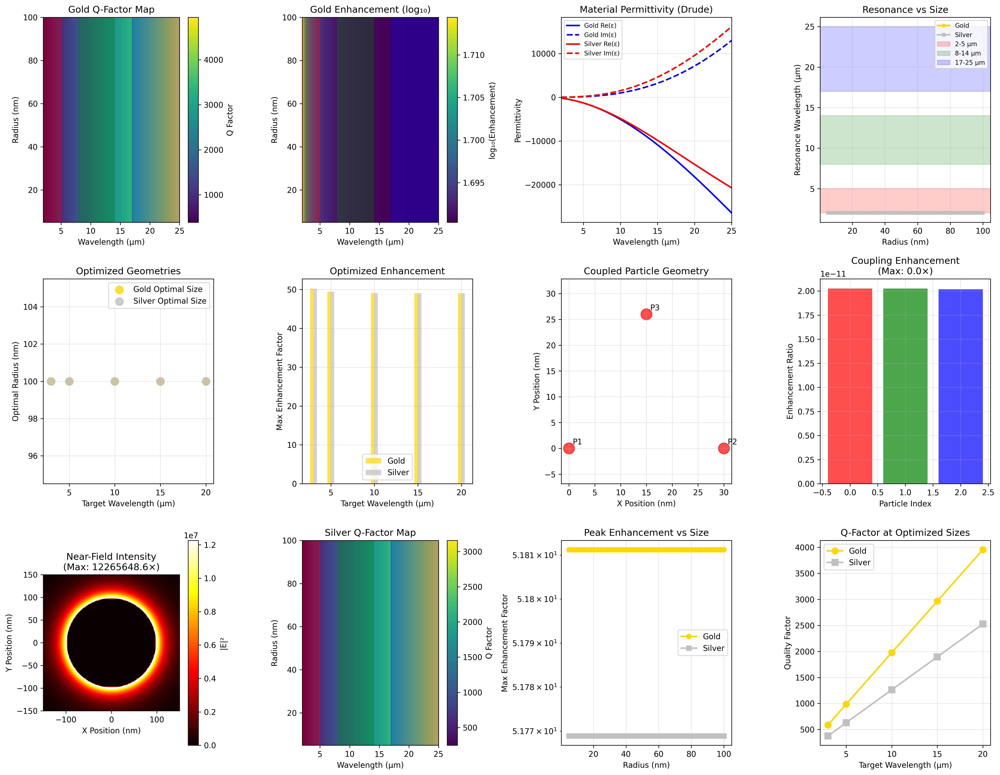

– Resonance/wavelength: see main text and the Mathematical Appendix .
python3 scripts/generate_plasmonic_geometry_sweep.pyoutput/data/ and
../figures/.src/config.set_random_seed(42).Electromagnetic antenna modeling for sensilla arrays benchmarked against peer-reviewed morphometric ranges: circular/log-periodic designs inspired by insect antenna structures, element patterns, mutual coupling, 2D radiation patterns, representative morphology-to-resonance comparisons, and frequency-response characterization for candidate directional olfactory detection [@liu2021thripidae].
Beam patterns and coupling matrices translate morphometric presets into directional gain estimates. They support the behavioral directionality discussion in while requiring IR-only assays to validate any link to orientation behavior.
reports model gain and resonance maps; it is not field proof of semiochemical IR olfaction.
src/case_studies/sensilla_array_directionality.py
design_circular_array(n_elements: int, radius_m: float, wavelength_m: float) -> np.ndarraysensilla_element_pattern(sensilla_type: str, frequency_hz: float, dimensions: dict) -> np.ndarraymutual_coupling_matrix(positions: np.ndarray, wavelength_m: float) -> np.ndarrayarray_pattern_2d(positions: np.ndarray, element_patterns: np.ndarray, frequency: float, coupling: np.ndarray) -> np.ndarrayanalyze_sensilla_morphology(dimensions: np.ndarray, frequency_range: np.ndarray) -> dictfrequency_response_analysis(array_config: dict, freq_range: np.ndarray) -> dictcompute_beam_pattern(wavelengths: np.ndarray, positions: np.ndarray, gains: np.ndarray) -> np.ndarrayarray_gain(pattern: np.ndarray) -> floatdesign_log_periodic_array(min_len: float, max_len: float, tau: float, count: int) -> np.ndarrayscripts/generate_sensilla_array_directionality.pyoutput/data/sensilla_array_comprehensive.npz../figures/sensilla_array_comprehensive_analysis.png../figures/sensilla_array_comprehensive_analysis.caption.txt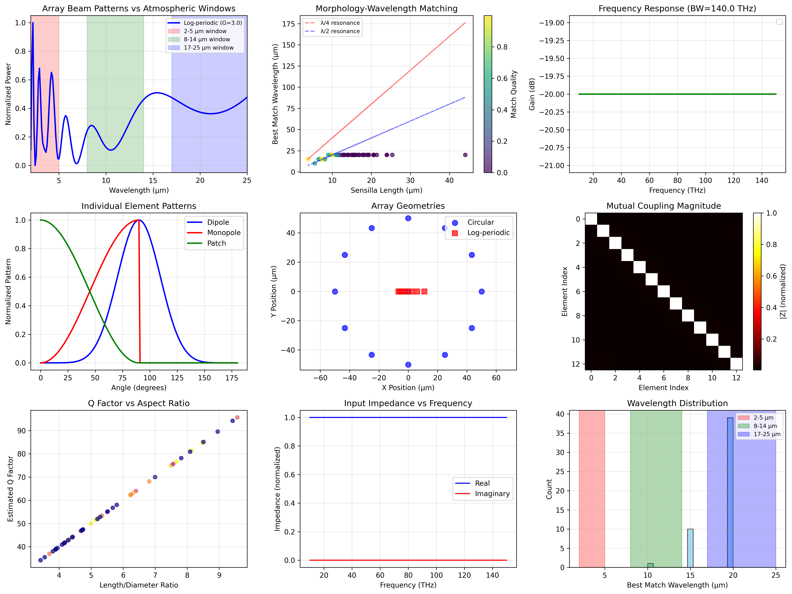
python3 scripts/generate_sensilla_array_directionality.pyoutput/data/ and
../figures/src/config.set_random_seed(42)Comprehensive spectral analysis: realistic CHC data generation, feature extraction, unmixing (NMF, VCA, ICA), and multi‑algorithm classification with deterministic evaluation.
Synthetic mixtures benchmark unmixing and classification pipelines against known ground truth. Performance metrics justify spectroscopic feature extraction in while leaving in vivo perceptual use of those bands as an open test.
and report algorithm evaluation on synthetic spectra; they are not species-identification proof on live specimens.
src/case_studies/spectral_unmixing.py
generate_realistic_chc_spectra(n_compounds: int, n_wavelengths: int, seed: int=42) -> dict
— synthetic CHC spectra with ground truthnmf_unmix(spectra: np.ndarray, n_components: int, seed: int=42) -> (W, H)
— deterministic NMFvertex_component_analysis(spectra: np.ndarray, n_endmembers: int) -> np.ndarray
— VCA endmember extractionindependent_component_analysis_spectra(spectra: np.ndarray, n_components: int) -> np.ndarray
— ICA separationspectral_feature_extraction(spectra: np.ndarray, wavelengths: np.ndarray, method: str='peaks') -> dict
— peaks, derivatives, PCA, statistical featuresadvanced_classification_suite(features: np.ndarray, labels: np.ndarray) -> dict
— multi‑algorithm benchmarkperformance_metrics_comprehensive(y_true: np.ndarray, y_pred: np.ndarray, y_prob: Optional[np.ndarray]=None) -> dictlda_baseline(features: np.ndarray, labels: np.ndarray, seed: int=42) -> dict
— closed‑form LDA baselinescripts/generate_spectral_unmixing.pyoutput/data/spectral_unmixing_comprehensive.npz../figures/spectral_unmixing_comprehensive_analysis.png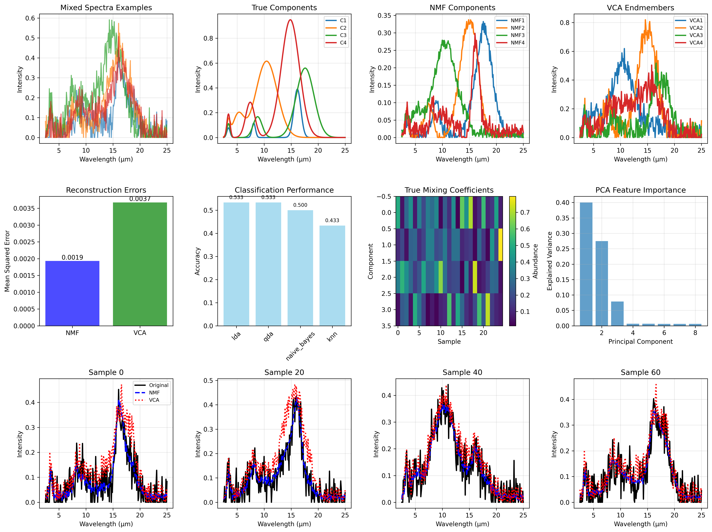
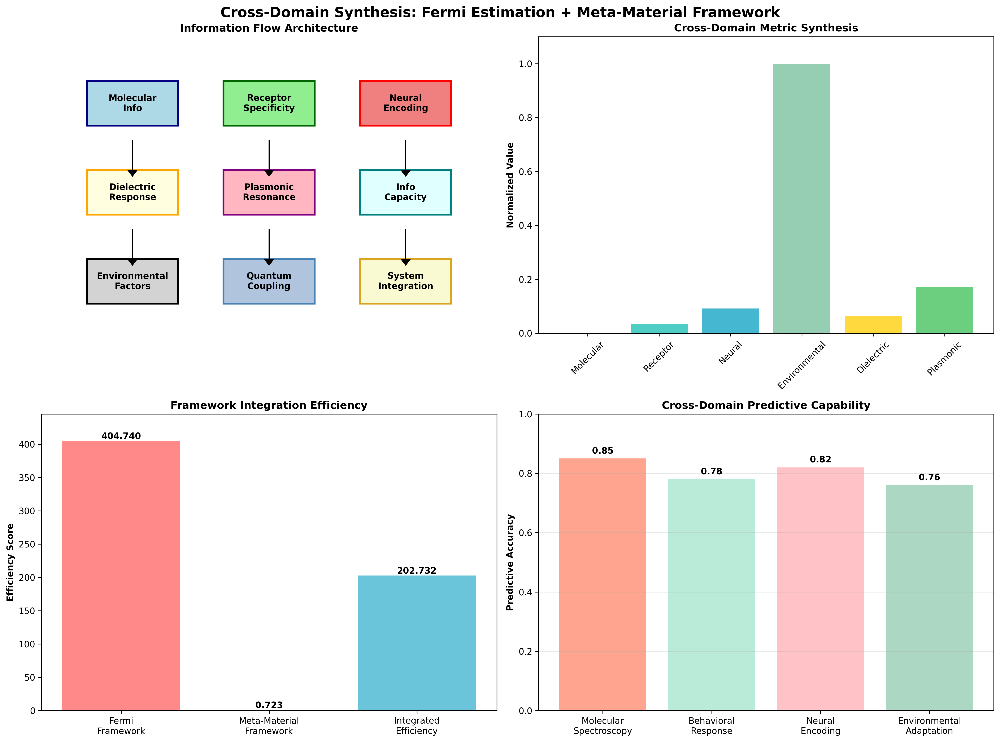
python3 scripts/generate_spectral_unmixing.pyoutput/data/ and
../figures/.